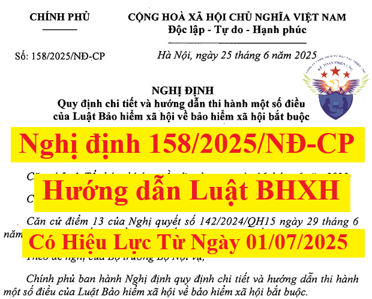

Ngày 25/6/2025, Chính phủ ban hành Nghị định 158/2025/NĐ-CP quy định chi tiết và hướng dẫn thi hành một số điều của Luật Bảo hiểm xã hội số: 41/2024/QH15 có hiệu lực từ ngày 01/7/2025.
Chi tiết nội dung của Nghị định 158/2025/NĐ-CP như sau:
NGHỊ ĐỊNH
Căn cứ Luật Tổ chức Chính phủ ngày 18 tháng 02 năm 2025;QUY ĐỊNH CHI TIẾT VÀ HƯỚNG DẪN THI HÀNH MỘT SỐ ĐIỀU CỦA LUẬT BẢO HIỂM XÃ HỘI VỀ BẢO HIỂM XÃ HỘI BẮT BUỘC Căn cứ Luật Tổ chức chính quyền địa phương ngày 16 tháng 6 năm 2025; Căn cứ Luật Bảo hiểm xã hội ngày 29 tháng 6 năm 2024; Căn cứ điểm 13 của Nghị quyết số 142/2024/QH15 ngày 29 tháng 6 năm 2024 của Quốc hội về Nghị quyết kỳ họp thứ 7, Quốc hội Khóa XV; Theo đề nghị của Bộ trưởng Bộ Nội vụ; Chính phủ ban hành Nghị định quy định chi tiết và hướng dẫn thi hành một số điều của Luật Bảo hiểm xã hội về bảo hiểm xã hội bắt buộc.
Chương I
Điều 1. Phạm vi điều chỉnhNHỮNG QUY ĐỊNH CHUNG Nghị định này quy định chi tiết và hướng dẫn thi hành một số điều của Luật Bảo hiểm xã hội về bảo hiểm xã hội bắt buộc và chế độ đối với người lao động không đủ điều kiện hưởng lương hưu và chưa đủ tuổi hưởng trợ cấp hưu trí xã hội; điểm 13 của Nghị quyết số 142/2024/QH15 ngày 29 tháng 6 năm 2024 của Quốc hội về Nghị quyết kỳ họp thứ 7, Quốc hội Khóa XV. Điều 2. Đối tượng áp dụng 1. Người lao động quy định tại các điểm a, b, c, g, h, i, k, l, m và n khoản 1 và khoản 2 Điều 2 của Luật Bảo hiểm xã hội. 2. Người thụ hưởng chế độ bảo hiểm xã hội theo quy định của Luật Bảo hiểm xã hội. 3. Người sử dụng lao động quy định tại khoản 3 Điều 2 của Luật Bảo hiểm xã hội. 4. Cơ quan, tổ chức, cá nhân khác có liên quan đến bảo hiểm xã hội bắt buộc. Điều 3. Đối tượng tham gia bảo hiểm xã hội bắt buộc 1. Người lao động thuộc đối tượng tham gia bảo hiểm xã hội bắt buộc thực hiện theo quy định tại các điểm a, b, c, g, h, i, k, l, m và n khoản 1 và khoản 2 Điều 2 của Luật Bảo hiểm xã hội. Người lao động quy định tại các điểm a, b, c, i, k, l khoản 1 và khoản 2 Điều 2 của Luật Bảo hiểm xã hội được cử đi học, thực tập, công tác trong và ngoài nước mà vẫn hưởng tiền lương ở trong nước thì thuộc đối tượng tham gia bảo hiểm xã hội bắt buộc. 2. Chủ hộ kinh doanh của hộ kinh doanh có đăng ký kinh doanh quy định tại điểm m khoản 1 Điều 2 của Luật Bảo hiểm xã hội tham gia bảo hiểm xã hội bắt buộc bao gồm: a) Chủ hộ kinh doanh của hộ kinh doanh có đăng ký kinh doanh nộp thuế theo phương pháp kê khai; b) Chủ hộ kinh doanh của hộ kinh doanh có đăng ký kinh doanh không thuộc đối tượng quy định tại điểm a khoản này thuộc đối tượng tham gia bảo hiểm xã hội bắt buộc từ ngày 01 tháng 7 năm 2029. 3. Đối tượng quy định tại khoản 2 Điều này và điểm n khoản 1 Điều 2 của Luật Bảo hiểm xã hội đồng thời thuộc nhiều đối tượng quy định tại khoản 1 Điều 2 của Luật Bảo hiểm xã hội thì việc tham gia bảo hiểm xã hội bắt buộc thực hiện như sau: a) Đối tượng quy định tại khoản 2 Điều này đồng thời thuộc đối tượng quy định tại một trong các điểm b, c, d, đ, e, i, a, l, k, n, h và g khoản 1 Điều 2 của Luật Bảo hiểm xã hội thì tham gia bảo hiểm xã hội bắt buộc theo đối tượng tương ứng quy định tại điểm b, c, d, đ, e, i, a, l, k, n, h hoặc g khoản 1 Điều 2 của Luật Bảo hiểm xã hội theo thứ tự đến trước; b) Đối tượng quy định tại điểm n khoản 1 Điều 2 của Luật Bảo hiểm xã hội đồng thời thuộc đối tượng quy định tại một trong các điểm b, c, d, đ, e, i, a, l và k khoản 1 Điều 2 của Luật Bảo hiểm xã hội thì tham gia bảo hiểm xã hội bắt buộc theo đối tượng tương ứng quy định tại điểm b, c, d, đ, e, i, a, l hoặc k khoản 1 Điều 2 của Luật Bảo hiểm xã hội theo thứ tự đến trước. 4. Đối tượng hưởng trợ cấp bảo hiểm xã hội, trợ cấp hằng tháng không thuộc đối tượng tham gia bảo hiểm xã hội bắt buộc quy định tại điểm a khoản 7 Điều 2 của Luật Bảo hiểm xã hội bao gồm: a) Người đang hưởng trợ cấp mất sức lao động hằng tháng; b) Người đang hưởng trợ cấp hằng tháng theo quy định tại Nghị định số 09/1998/NĐ-CP ngày 23 tháng 01 năm 1998 của Chính phủ sửa đổi, bổ sung Nghị định số 50/CP ngày 26 tháng 7 năm 1995 của Chính phủ về chế độ sinh hoạt phí đối với cán bộ xã, phường, thị trấn (sau đây được viết là Nghị định số 09/1998/NĐ-CP); c) Người đang hưởng trợ cấp hằng tháng theo quy định tại Quyết định số 91/2000/QĐ-TTg ngày 04 tháng 8 năm 2000 của Thủ tướng Chính phủ về việc trợ cấp cho những người đã hết tuổi lao động tại thời điểm ngừng hưởng trợ cấp mất sức lao động hằng tháng (sau đây được viết là Quyết định số 91/2000/QĐ-TTg); Quyết định số 613/QĐ-TTg ngày 06 tháng 5 năm 2010 của Thủ tướng Chính phủ về việc trợ cấp hằng tháng cho những người có từ đủ 15 năm đến dưới 20 năm công tác thực tế đã hết thời hạn hưởng trợ cấp mất sức lao động (sau đây được viết là Quyết định số 613/QĐ-TTg); d) Người đang hưởng chế độ trợ cấp hằng tháng theo quy định tại Quyết định số 142/2008/QĐ-TTg ngày 27 tháng 10 năm 2008 của Thủ tướng Chính phủ về thực hiện chế độ đối với quân nhân tham gia kháng chiến chống Mỹ cứu nước có dưới 20 năm công tác trong quân đội đã phục viên, xuất ngũ về địa phương; Quyết định số 38/2010/QĐ-TTg ngày 06 tháng 5 năm 2010 của Thủ tướng Chính phủ về việc sửa đổi, bổ sung Quyết định số 142/2008/QĐ-TTg ngày 27 tháng 10 năm 2008 của Thủ tướng Chính phủ về thực hiện chế độ đối với quân nhân tham gia kháng chiến chống Mỹ cứu nước có dưới 20 năm công tác trong quân đội đã phục viên, xuất ngũ về địa phương; Quyết định số 53/2010/QĐ-TTg ngày 20 tháng 8 năm 2010 của Thủ tướng Chính phủ quy định về chế độ đối với cán bộ, chiến sĩ Công an nhân dân tham gia kháng chiến chống Mỹ có dưới 20 năm công tác trong Công an nhân dân đã thôi việc, xuất ngũ về địa phương; Quyết định số 62/2011/QĐ-TTg ngày 09 tháng 11 năm 2011 của Thủ tướng Chính phủ về chế độ, chính sách đối với đối tượng tham gia chiến tranh bảo vệ Tổ quốc, làm nhiệm vụ quốc tế ở Căm-pu-chi-a, giúp bạn Lào sau ngày 30 tháng 4 năm 1975 đã phục viên, xuất ngũ, thôi việc; đ) Người đang hưởng trợ cấp hằng tháng theo Điều 23 của Luật Bảo hiểm xã hội. 5. Đối tượng quy định tại điểm a khoản 1 Điều 2 của Luật Bảo hiểm xã hội làm việc không trọn thời gian, có tiền lương trong tháng tính theo quy định tại khoản 2 Điều 7 của Nghị định này thấp hơn tiền lương làm căn cứ đóng bảo hiểm xã hội bắt buộc thấp nhất; người lao động làm việc theo hợp đồng thử việc theo quy định của pháp luật lao động không thuộc đối tượng tham gia bảo hiểm xã hội bắt buộc. Điều 4. Bản sao các giấy tờ dùng để thực hiện bảo hiểm xã hội quy định tại Luật Bảo hiểm xã hội Bản sao các giấy tờ dùng để thực hiện bảo hiểm xã hội quy định tại Luật Bảo hiểm xã hội thuộc trường hợp khác quy định tại điểm c khoản 12 Điều 3 của Luật Bảo hiểm xã hội là giấy tờ được cơ quan bảo hiểm xã hội xác nhận đã đối chiếu với bản chính, đảm bảo tính chính xác của bản sao so với bản chính trong trường hợp hồ sơ nộp trực tiếp tại cơ quan bảo hiểm xã hội. Điều 5. Mức tham chiếu 1. Mức tham chiếu là mức tiền do Chính phủ quyết định dùng để tính mức đóng, mức hưởng một số chế độ bảo hiểm xã hội quy định trong Luật Bảo hiểm xã hội. 2. Khi chưa bãi bỏ mức lương cơ sở thì mức tham chiếu quy định tại Luật Bảo hiểm xã hội bằng mức lương cơ sở. Tại thời điểm mức lương cơ sở bị bãi bỏ thì mức tham chiếu không thấp hơn mức lương cơ sở đó. 3. Khi mức lương cơ sở bị bãi bỏ thì mức tham chiếu được Chính phủ điều chỉnh trên cơ sở mức tăng của chỉ số giá tiêu dùng, tăng trưởng kinh tế, phù hợp với khả năng của ngân sách nhà nước và quỹ bảo hiểm xã hội. Chương II ĐĂNG KÝ THAM GIA VÀ QUẢN LÝ THU, ĐÓNG BẢO HIỂM XÃ HỘI BẮT BUỘC Điều 6. Đăng ký tham gia bảo hiểm xã hội và cấp sổ bảo hiểm xã hội Việc đăng ký tham gia bảo hiểm xã hội và cấp sổ bảo hiểm xã hội được thực hiện theo quy định tại Điều 28 của Luật Bảo hiểm xã hội và được quy định chi tiết như sau: 1. Đối tượng quy định tại khoản 2 Điều 3 của Nghị định này và điểm n khoản 1 Điều 2 của Luật Bảo hiểm xã hội nếu đăng ký tham gia bảo hiểm xã hội qua hộ kinh doanh, doanh nghiệp, hợp tác xã, liên hiệp hợp tác xã tham gia quản lý thì thực hiện theo quy định tại khoản 1 Điều 28 của Luật Bảo hiểm xã hội. 2. Đối tượng quy định tại khoản 2 Điều 3 của Nghị định này và điểm n khoản 1 Điều 2 của Luật Bảo hiểm xã hội nếu đăng ký tham gia bảo hiểm xã hội trực tiếp với cơ quan bảo hiểm xã hội thì thực hiện theo quy định tại khoản 2 Điều 28 của Luật Bảo hiểm xã hội. 3. Đối tượng quy định tại điểm g khoản 1 Điều 2 của Luật Bảo hiểm xã hội nộp hồ sơ là tờ khai quy định tại điểm b khoản 1 Điều 27 của Luật Bảo hiểm xã hội cho cơ quan bảo hiểm xã hội trước khi đi làm việc ở nước ngoài. 4. Cơ quan, tổ chức quản lý cán bộ, công chức, viên chức, người lao động trước khi người này được cử làm thành viên cơ quan đại diện nước Cộng hòa xã hội chủ nghĩa Việt Nam ở nước ngoài đăng ký tham gia bảo hiểm xã hội cho đối tượng quy định tại điểm h khoản 1 Điều 2 của Luật Bảo hiểm xã hội thực hiện theo quy định tại khoản 1 Điều 28 của Luật Bảo hiểm xã hội. Điều 7. Tiền lương làm căn cứ đóng bảo hiểm xã hội bắt buộc Tiền lương làm căn cứ đóng bảo hiểm xã hội bắt buộc được thực hiện theo quy định tại khoản 1 Điều 31 của Luật Bảo hiểm xã hội và được quy định chi tiết như sau: 1. Tiền lương làm căn cứ đóng bảo hiểm xã hội bắt buộc theo quy định tại điểm b khoản 1 Điều 31 của Luật Bảo hiểm xã hội là tiền lương tháng, bao gồm mức lương theo công việc hoặc chức danh, phụ cấp lương và các khoản bổ sung khác, trong đó: a) Mức lương theo công việc hoặc chức danh tính theo thời gian (theo tháng) của công việc hoặc chức danh theo thang lương, bảng lương do người sử dụng lao động xây dựng theo quy định tại Điều 93 của Bộ luật Lao động được thỏa thuận trong hợp đồng lao động; b) Các khoản phụ cấp lương để bù đắp yếu tố về điều kiện lao động, tính chất phức tạp công việc, điều kiện sinh hoạt, mức độ thu hút lao động mà mức lương tại điểm a khoản này chưa được tính đến hoặc tính chưa đầy đủ, được thỏa thuận trong hợp đồng lao động; không bao gồm khoản phụ cấp lương phụ thuộc hoặc biến động theo năng suất lao động, quá trình làm việc và chất lượng thực hiện công việc của người lao động; c) Các khoản bổ sung khác xác định được mức tiền cụ thể cùng với mức lương theo quy định tại điểm a khoản này, được thỏa thuận trong hợp đồng lao động và trả thường xuyên, ổn định trong mỗi kỳ trả lương; không bao gồm các khoản bổ sung khác phụ thuộc hoặc biến động theo năng suất lao động, quá trình làm việc và chất lượng thực hiện công việc của người lao động. 2. Tiền lương làm căn cứ đóng bảo hiểm xã hội bắt buộc đối với đối tượng quy định tại điểm l khoản 1 Điều 2 của Luật Bảo hiểm xã hội là tiền lương tính trong tháng theo thỏa thuận trong hợp đồng lao động. Trường hợp trong hợp đồng lao động thỏa thuận lương theo giờ thì tiền lương tính trong tháng bằng tiền lương theo giờ nhân với số giờ làm việc trong tháng theo thỏa thuận trong hợp đồng lao động; Trường hợp trong hợp đồng lao động thỏa thuận lương theo ngày thì tiền lương tính trong tháng bằng tiền lương theo ngày nhân với số ngày làm việc trong tháng theo thỏa thuận trong hợp đồng lao động; Trường hợp trong hợp đồng lao động thỏa thuận lương theo tuần thì tiền lương tính trong tháng bằng tiền lương theo tuần nhân với số tuần làm việc trong tháng theo thỏa thuận trong hợp đồng lao động. 3. Tiền lương làm căn cứ đóng bảo hiểm xã hội bắt buộc đối với đối tượng quy định tại điểm k khoản 1 Điều 2 của Luật Bảo hiểm xã hội là mức phụ cấp hằng tháng của người hoạt động không chuyên trách ở cấp xã, ở thôn, tổ dân phố. Trường hợp mức phụ cấp hằng tháng của người hoạt động không chuyên trách ở cấp xã, ở thôn, tổ dân phố thấp hơn tiền lương làm căn cứ đóng bảo hiểm xã hội bắt buộc thấp nhất thì tiền lương làm căn cứ đóng bảo hiểm xã hội bắt buộc bằng tiền lương làm căn cứ đóng bảo hiểm xã hội bắt buộc thấp nhất quy định tại điểm đ khoản 1 Điều 31 của Luật Bảo hiểm xã hội. 4. Tiền lương làm căn cứ đóng bảo hiểm xã hội bắt buộc đối với đối tượng quy định tại điểm i khoản 1 Điều 2 của Luật Bảo hiểm xã hội là tiền lương mà đối tượng này được hưởng theo quy định của pháp luật. 5. Trường hợp tiền lương ghi trong hợp đồng lao động và tiền lương trả cho người lao động bằng ngoại tệ thì tiền lương làm căn cứ đóng bảo hiểm xã hội bắt buộc được tính bằng Đồng Việt Nam trên cơ sở tiền lương bằng ngoại tệ được chuyển đổi sang Đồng Việt Nam theo tỷ giá bình quân của tỷ giá mua vào theo hình thức chuyển khoản của Đồng Việt Nam với ngoại tệ do 4 Ngân hàng thương mại có vốn Nhà nước công bố tại thời điểm cuối ngày của ngày 02 tháng 01 cho 06 tháng đầu năm và ngày 01 tháng 07 cho 06 tháng cuối năm; trường hợp các ngày này trùng vào ngày lễ, ngày nghỉ thì lấy tỷ giá của ngày làm việc tiếp theo liền kề. Điều 8. Truy thu, truy đóng bảo hiểm xã hội bắt buộc 1. Các trường hợp truy thu, truy đóng bảo hiểm xã hội bắt buộc: a) Được điều chỉnh tăng tiền lương làm tăng tiền lương làm căn cứ đóng bảo hiểm xã hội bắt buộc mà thời gian thực hiện hồi tố trở về trước; b) Trường hợp người lao động Việt Nam đi làm việc ở nước ngoài được gia hạn hợp đồng hoặc ký hợp đồng lao động mới ngay tại nước tiếp nhận lao động thực hiện truy đóng sau khi về nước; c) Đối tượng quy định tại điểm m và điểm n khoản 1 Điều 2 của Luật Bảo hiểm xã hội đóng sau thời hạn đóng bảo hiểm xã hội chậm nhất quy định tại điểm b khoản 4 Điều 33 của Luật Bảo hiểm xã hội. 2. Số tiền truy thu, truy đóng bảo hiểm xã hội bắt buộc được tính như sau: a) Đối với các trường hợp quy định tại điểm a và điểm b khoản 1 Điều này, số tiền truy thu là số tiền phải đóng bảo hiểm xã hội bắt buộc theo quy định tại Điều 33 và Điều 34 của Luật Bảo hiểm xã hội. Trường hợp đến hết ngày cuối cùng của tháng tiếp theo sau tháng có quyết định điều chỉnh tăng tiền lương hoặc tháng về nước mà người sử dụng lao động và người lao động chưa thực hiện truy đóng bảo hiểm xã hội bắt buộc thì khi truy thu bảo hiểm xã hội bắt buộc cơ quan bảo hiểm xã hội thực hiện theo quy định tại khoản 1 Điều 40 và khoản 1 Điều 41 của Luật Bảo hiểm xã hội; b) Đối với trường hợp quy định tại điểm c khoản 1 Điều này, số tiền truy thu là số tiền phải đóng bảo hiểm xã hội bắt buộc theo quy định tại điểm a khoản 4 Điều 33 của Luật Bảo hiểm xã hội và số tiền bằng 0,03%/ngày tính trên số tiền bảo hiểm xã hội bắt buộc phải đóng và số ngày đóng sau thời hạn đóng bảo hiểm xã hội chậm nhất quy định tại điểm b khoản 4 Điều 33 của Luật Bảo hiểm xã hội. 3. Người sử dụng lao động có trách nhiệm đóng đủ số tiền phải đóng bảo hiểm xã hội bắt buộc quy định tại khoản 1 Điều 40 và khoản 1 Điều 41 của Luật Bảo hiểm xã hội đối với người lao động đủ điều kiện hưởng bảo hiểm xã hội hoặc thôi việc, chấm dứt hợp đồng lao động, hợp đồng làm việc để kịp thời giải quyết chế độ bảo hiểm xã hội cho người lao động. Trường hợp người sử dụng lao động chưa đóng đủ số tiền phải đóng bảo hiểm xã hội bắt buộc thì giải quyết chế độ bảo hiểm xã hội trên cơ sở thời gian đã đóng bảo hiểm xã hội đối với người lao động đủ điều kiện hưởng chế độ bảo hiểm xã hội, xác nhận thời gian đóng bảo hiểm xã hội đến thời điểm đã đóng bảo hiểm xã hội đối với trường hợp người lao động thôi việc, chấm dứt hợp đồng lao động, hợp đồng làm việc; sau khi thu hồi số tiền phải đóng bảo hiểm xã hội bắt buộc thì xác nhận bổ sung thời gian đóng bảo hiểm xã hội và thực hiện điều chỉnh lại mức hưởng chế độ bảo hiểm xã hội. Điều 9. Mức đóng, phương thức và thời hạn đóng bảo hiểm xã hội bắt buộc của người lao động, người sử dụng lao động Mức đóng, phương thức và thời hạn đóng bảo hiểm xã hội bắt buộc của người lao động, người sử dụng lao động thực hiện theo quy định tại Điều 33 và Điều 34 của Luật Bảo hiểm xã hội và được quy định chi tiết như sau: Đối tượng quy định tại điểm k khoản 1 Điều 2 của Luật Bảo hiểm xã hội không làm việc và không hưởng phụ cấp từ 14 ngày làm việc trở lên trong tháng thì người lao động và người sử dụng lao động không phải đóng bảo hiểm xã hội tháng đó. Điều 10. Tạm dừng đóng vào quỹ hưu trí và tử tuất theo quy định tại khoản 1 và khoản 3 Điều 37 của Luật Bảo hiểm xã hội 1. Người sử dụng lao động được xem xét tạm dừng đóng vào quỹ hưu trí và tử tuất khi thuộc một trong các trường hợp sau: a) Gặp khó khăn khi thay đổi cơ cấu, công nghệ hoặc do khủng hoảng, suy thoái kinh tế hoặc thực hiện chính sách của Nhà nước khi tái cơ cấu nền kinh tế hoặc thực hiện cam kết quốc tế; b) Gặp khó khăn do thiên tai, hỏa hoạn, dịch bệnh, mất mùa. 2. Điều kiện tạm dừng đóng vào quỹ hưu trí và tử tuất: Người sử dụng lao động thuộc một trong các trường hợp quy định tại khoản 1 Điều này và đáp ứng một trong các điều kiện dưới đây thì người sử dụng lao động và người lao động được tạm dừng đóng vào quỹ hưu trí và tử tuất: a) Phải tạm dừng sản xuất, kinh doanh từ 30 ngày trở lên và không bố trí được việc làm cho người lao động, trong đó số lao động thuộc đối tượng tham gia bảo hiểm xã hội bắt buộc phải tạm thời nghỉ việc từ 50% trở lên so với tổng số lao động có mặt trước khi tạm dừng sản xuất, kinh doanh; b) Bị thiệt hại trên 50% tổng giá trị tài sản do thiên tai, hỏa hoạn, dịch bệnh, mất mùa gây ra, không kể giá trị tài sản là đất hoặc không bố trí được việc làm cho người lao động, trong đó số lao động thuộc đối tượng tham gia bảo hiểm xã hội bắt buộc phải tạm thời nghỉ việc từ 50% trở lên so với tổng số lao động có mặt trước khi thiên tai, hỏa hoạn, dịch bệnh, mất mùa. 3. Thời gian tạm dừng đóng vào quỹ hưu trí và tử tuất: a) Thời gian tạm dừng đóng vào quỹ hưu trí và tử tuất theo tháng và không quá 12 tháng tính từ tháng người sử dụng lao động có văn bản đề nghị gửi cơ quan bảo hiểm xã hội. Trong thời gian tạm dừng đóng vào quỹ hưu trí và tử tuất, người sử dụng lao động vẫn phải đóng vào quỹ ốm đau và thai sản, quỹ bảo hiểm tai nạn lao động, bệnh nghề nghiệp. Trường hợp trong thời gian tạm dừng đóng vào quỹ hưu trí và tử tuất mà người lao động đủ điều kiện hưởng chế độ hưu trí, tử tuất hoặc chấm dứt hợp đồng lao động thì người sử dụng lao động và người lao động hoặc thân nhân người lao động thực hiện đóng bù cho thời gian tạm dừng đóng để giải quyết chế độ cho người lao động, thân nhân người lao động hoặc xác nhận thời gian đóng bảo hiểm xã hội cho người lao động; b) Hết thời hạn tạm dừng đóng quy định tại điểm a khoản này, người sử dụng lao động và người lao động tiếp tục đóng bảo hiểm xã hội bắt buộc và đóng bù cho thời gian tạm dừng đóng. Thời hạn đóng bù chậm nhất là ngày cuối cùng của tháng tiếp theo tháng kết thúc việc tạm dừng đóng, số tiền đóng bù của những tháng tạm dừng đóng bằng số tiền phải đóng bảo hiểm xã hội bắt buộc theo quy định tại Điều 33 và Điều 34 của Luật Bảo hiểm xã hội. Trường hợp sau thời hạn đóng bù chậm nhất, người sử dụng lao động và người lao động mới đóng bù cho những tháng tạm dừng đóng thì thực hiện theo quy định tại Điều 40 và Điều 41 của Luật Bảo hiểm xã hội. 4. Thẩm quyền, trình tự, thủ tục xác định số lao động thuộc đối tượng tham gia bảo hiểm xã hội bắt buộc tạm thời nghỉ việc, giá trị tài sản bị thiệt hại quy định tại khoản 2 Điều này được quy định như sau: a) Thẩm quyền xác định số lao động thuộc đối tượng tham gia bảo hiểm xã hội bắt buộc tạm thời nghỉ việc đối với cơ quan, đơn vị, tổ chức, doanh nghiệp thuộc Ủy ban nhân dân địa phương quản lý do cơ quan nội vụ địa phương xác định; đối với cơ quan, đơn vị, tổ chức, doanh nghiệp thuộc bộ, ngành trung ương quản lý do bộ, ngành xác định, số lao động thuộc đối tượng tham gia bảo hiểm xã hội bắt buộc tạm thời nghỉ việc được tính so với tổng số lao động có mặt trước khi tạm dừng sản xuất, kinh doanh hoặc trước khi thiên tai, hỏa hoạn, dịch bệnh, mất mùa. Thẩm quyền xác định giá trị tài sản bị thiệt hại đối với cơ quan, đơn vị, tổ chức, doanh nghiệp thuộc Ủy ban nhân dân địa phương quản lý do cơ quan tài chính địa phương xác định; đối với cơ quan, đơn vị, tổ chức, doanh nghiệp thuộc bộ, ngành trung ương quản lý do cơ quan tài chính của bộ, ngành xác định. Giá trị tài sản bị thiệt hại được tính so với giá trị tài sản theo báo cáo kiểm kê tài sản gần nhất trước thời điểm bị thiệt hại; b) Người sử dụng lao động thuộc đối tượng quy định tại điểm a khoản 2 Điều này, làm văn bản đề nghị kèm theo danh sách lao động tại thời điểm trước khi tạm dừng sản xuất, kinh doanh và tại thời điểm đề nghị; danh sách lao động thuộc đối tượng tham gia bảo hiểm xã hội bắt buộc phải tạm thời nghỉ việc. Người sử dụng lao động thuộc đối tượng quy định tại điểm b khoản 2 Điều này bị thiệt hại trên 50% tổng giá trị tài sản, làm văn bản đề nghị kèm theo Báo cáo kiểm kê tài sản gần nhất trước thời điểm bị thiệt hại; Biên bản kiểm kê tài sản bị thiệt hại do thiên tai, hoả hoạn, dịch bệnh, mất mùa. Trường hợp không bố trí được việc làm cho người lao động, trong đó số lao động thuộc đối tượng tham gia bảo hiểm xã hội bắt buộc phải tạm thời nghỉ việc từ 50% trở lên so với tổng số lao động có mặt trước khi thiên tai, hỏa hoạn, dịch bệnh, mất mùa thì làm văn bản đề nghị kèm theo danh sách lao động tại thời điểm trước khi thiên tai, hỏa hoạn, dịch bệnh, mất mùa và tại thời điểm đề nghị; danh sách lao động thuộc đối tượng tham gia bảo hiểm xã hội bắt buộc phải tạm thời nghỉ việc; c) Trong thời hạn 15 ngày làm việc kể từ ngày nhận được đề nghị của người sử dụng lao động, cơ quan quy định tại điểm a khoản này có trách nhiệm xem xét, xác định và có văn bản trả lời người sử dụng lao động. 5. Người sử dụng lao động đảm bảo điều kiện quy định tại các khoản 1, 2 và 3 Điều này có văn bản đề nghị tạm dừng đóng vào quỹ hưu trí và tử tuất, kèm theo văn bản xác định số lao động thuộc đối tượng tham gia bảo hiểm xã hội bắt buộc tạm thời nghỉ việc hoặc văn bản xác định giá trị tài sản bị thiệt hại gửi cơ quan bảo hiểm xã hội. 6. Trong thời hạn 10 ngày làm việc kể từ ngày nhận được hồ sơ đề nghị của người sử dụng lao động, cơ quan bảo hiểm xã hội có trách nhiệm giải quyết tạm dừng đóng vào quỹ hưu trí và tử tuất; trường hợp không giải quyết thì phải trả lời bằng văn bản và nêu rõ lý do. Điều 11. Tạm dừng đóng bảo hiểm xã hội bắt buộc theo quy định tại khoản 2 và 3 Điều 37 của Luật Bảo hiểm xã hội 1. Cán bộ, công chức, viên chức đang tham gia bảo hiểm xã hội bắt buộc mà bị tạm giam, tạm đình chỉ công tác từ 14 ngày làm việc trở lên trong tháng thì việc tạm dừng đóng bảo hiểm xã hội bắt buộc được thực hiện như sau: a) Trong thời gian bị tạm giam, tạm đình chỉ công tác từ 14 ngày làm việc trở lên trong tháng thì cán bộ, công chức, viên chức và người sử dụng lao động tạm dừng đóng bảo hiểm xã hội bắt buộc; b) Sau thời gian tạm giam, tạm đình chỉ công tác từ 14 ngày làm việc trở lên trong tháng nếu cán bộ, công chức, viên chức được truy lĩnh hưởng đầy đủ 100% tiền lương trong thời gian bị tạm giam, tạm đình chỉ công tác thì thực hiện việc đóng bù bảo hiểm xã hội bắt buộc cho thời gian bị tạm giam, tạm đình chỉ công tác. Thời hạn đóng bù chậm nhất là ngày cuối cùng của tháng tiếp theo tháng kết thúc việc tạm dừng đóng. Số tiền đóng bù của những tháng tạm dừng đóng bằng số tiền phải đóng bảo hiểm xã hội bắt buộc theo quy định tại Điều 33 và Điều 34 của Luật Bảo hiểm xã hội. Trường hợp sau thời hạn đóng bù chậm nhất, người sử dụng lao động và cán bộ, công chức, viên chức mới đóng bù cho những tháng tạm dừng đóng thì thực hiện theo quy định tại Điều 40 và Điều 41 của Luật Bảo hiểm xã hội; c) Trường hợp sau thời gian tạm giam, tạm đình chỉ công tác từ 14 ngày làm việc trở lên trong tháng nếu cán bộ, công chức, viên chức không được hưởng đầy đủ 100% tiền lương trong thời gian bị tạm giam, tạm đình chỉ công tác thì không thực hiện việc đóng bù bảo hiểm xã hội bắt buộc cho thời gian bị tạm giam, tạm đình chỉ công tác. 2. Người lao động không thuộc đối tượng quy định tại khoản 1 Điều này mà bị tạm đình chỉ công việc từ 14 ngày làm việc trở lên trong tháng thì việc tạm dừng đóng bảo hiểm xã hội bắt buộc được thực hiện như sau: a) Trong thời gian bị tạm đình chỉ công việc từ 14 ngày làm việc trở lên trong tháng thì người lao động và người sử dụng lao động tạm dừng đóng bảo hiểm xã hội bắt buộc; b) Trường hợp sau thời gian tạm đình chỉ công việc từ 14 ngày làm việc trở lên trong tháng mà người lao động được người sử dụng lao động trả đủ tiền lương cho thời gian bị tạm đình chỉ công việc thì thực hiện việc đóng bù bảo hiểm xã hội bắt buộc cho thời gian bị tạm đình chỉ công việc. Thời hạn đóng bù chậm nhất là ngày cuối cùng của tháng tiếp theo tháng kết thúc việc tạm dừng đóng. Số tiền đóng bù của những tháng tạm dừng đóng bằng số tiền phải đóng bảo hiểm xã hội bắt buộc theo quy định tại Điều 33 và Điều 34 của Luật Bảo hiểm xã hội. Trường hợp sau thời hạn đóng bù chậm nhất, người sử dụng lao động và người lao động mới đóng bù cho những tháng tạm dừng đóng thì thực hiện theo quy định tại Điều 40 và Điều 41 của Luật Bảo hiểm xã hội; c) Trường hợp sau thời gian tạm đình chỉ công việc từ 14 ngày làm việc trở lên trong tháng mà người lao động không được người sử dụng lao động trả đủ tiền lương cho thời gian bị tạm đình chỉ công việc thì không thực hiện việc đóng bù bảo hiểm xã hội bắt buộc cho thời gian bị tạm đình chỉ công việc. 3. Người lao động quy định tại điểm g khoản 1 Điều 2 của Luật Bảo hiểm xã hội, khi tạm thời bị mất việc làm trong thời gian thực hiện hợp đồng mà được cơ quan, tổ chức, doanh nghiệp làm dịch vụ đưa người lao động đi làm việc ở nước ngoài xác nhận thì thời gian này được tạm dừng đóng bảo hiểm xã hội bắt buộc. Sau thời gian tạm thời mất việc làm nếu người lao động trở lại làm việc thì tiếp tục đóng bảo hiểm xã hội bắt buộc theo quy định, không thực hiện việc đóng bù bảo hiểm xã hội bắt buộc cho thời gian bị mất việc làm tạm thời.
Chương III
CHẾ ĐỘ BẢO HIỂM XÃ HỘI BẮT BUỘC
Mục 1. CHẾ ĐỘ HƯU TRÍ
Điều 12. Điều kiện hưởng lương hưuĐiều kiện hưởng lương hưu thực hiện theo quy định tại Điều 64 và Điều 65 của Luật Bảo hiểm xã hội và được quy định chi tiết như sau: 1. Công việc khai thác than trong hầm lò theo Phụ lục I ban hành kèm theo Nghị định này. 2. Khi xác định điều kiện hưởng lương hưu đối với trường hợp hồ sơ của người lao động không xác định được ngày, tháng sinh mà chỉ có năm sinh thì lấy ngày 01 tháng 01 của năm sinh để làm căn cứ xác định tuổi của người lao động. Trường hợp không xác định được ngày sinh mà chỉ có tháng, năm sinh thì lấy ngày 01 của tháng, năm sinh để làm căn cứ xác định tuổi của người lao động. 3. Khi xác định thời gian làm việc ở nơi có phụ cấp khu vực hệ số 0,7 trở lên đối với thời gian làm việc trước ngày 01 tháng 01 năm 1995 để làm căn cứ xét điều kiện hưởng lương hưu thì căn cứ theo quy định của pháp luật về phụ cấp khu vực tại thời điểm giải quyết. Đối với địa bàn mà pháp luật về phụ cấp khu vực tại thời điểm giải quyết không quy định hoặc quy định hệ số phụ cấp khu vực thấp hơn 0,7 nhưng người lao động đã có thời gian thực tế làm việc ở nơi có phụ cấp khu vực hệ số 0,7 trở lên theo quy định tại các văn bản quy định về phụ cấp khu vực trước đây thì căn cứ quy định tại các văn bản đó để xác định thời gian làm việc ở nơi có phụ cấp khu vực hệ số 0,7 trở lên làm căn cứ xét điều kiện hưởng lương hưu. Trường hợp người lao động có thời gian công tác tại các chiến trường B, C trước ngày 30 tháng 4 năm 1975 và chiến trường K trước ngày 31 tháng 8 năm 1989 được tính là thời gian đóng bảo hiểm xã hội thì thời gian này được tính là thời gian làm việc ở nơi có phụ cấp khu vực hệ số 0,7 để làm căn cứ xét điều kiện hưởng lương hưu. 4. Đối tượng quy định tại điểm d và điểm đ khoản 1 Điều 2 của Luật Bảo hiểm xã hội bị tước danh hiệu quân nhân hoặc tước danh hiệu công an nhân dân thì điều kiện hưởng lương hưu thực hiện theo quy định tại khoản 1 Điều 64 và khoản 1 Điều 65 của Luật Bảo hiểm xã hội. Điều 13. Mức lương hưu hằng tháng Mức lương hưu hằng tháng thực hiện theo quy định tại Điều 66 của Luật Bảo hiểm xã hội và được quy định chi tiết như sau: 1. Mức lương hưu hằng tháng của người lao động được tính bằng tỷ lệ hưởng lương hưu hằng tháng nhân với mức bình quân tiền lương làm căn cứ đóng bảo hiểm xã hội quy định tại Điều 72 của Luật Bảo hiểm xã hội. Đối tượng quy định tại điểm a, b, c, d, đ, g và i khoản 1 Điều 2 của Luật Bảo hiểm xã hội đã tham gia bảo hiểm xã hội trước ngày 01 tháng 7 năm 2025 mà có thời gian đóng bảo hiểm xã hội bắt buộc theo các đối tượng này từ đủ 20 năm trở lên khi tính mức lương hưu hằng tháng thấp hơn mức tham chiếu thì được tính bằng mức tham chiếu. 2. Mốc tuổi để tính số năm nghỉ hưu trước tuổi quy định làm cơ sở tính giảm tỷ lệ hưởng lương hưu quy định tại khoản 3 Điều 66 của Luật Bảo hiểm xã hội được xác định như sau: a) Người lao động trong điều kiện lao động bình thường thì lấy mốc tuổi theo điểm a khoản 1 Điều 64 của Luật Bảo hiểm xã hội; b) Người lao động có tổng thời gian đóng bảo hiểm xã hội bắt buộc từ đủ 15 năm trở lên khi làm nghề, công việc nặng nhọc, độc hại, nguy hiểm hoặc đặc biệt nặng nhọc, độc hại, nguy hiểm thuộc danh mục nghề, công việc nặng nhọc, độc hại, nguy hiểm hoặc đặc biệt nặng nhọc, độc hại, nguy hiểm hoặc làm việc ở vùng có điều kiện kinh tế - xã hội đặc biệt khó khăn bao gồm cả thời gian làm việc ở nơi có phụ cấp khu vực hệ số 0,7 trở lên trước ngày 01 tháng 01 năm 2021 thì lấy mốc tuổi theo điểm b khoản 1 Điều 64 của Luật Bảo hiểm xã hội; c) Người lao động có từ đủ 15 năm trở lên làm công việc khai thác than trong hầm lò thì lấy mốc tuổi theo điểm c khoản 1 Điều 64 của Luật Bảo hiểm xã hội. Điều 14. Hưởng bảo hiểm xã hội một lần Hưởng bảo hiểm xã hội một lần thực hiện theo quy định tại Điều 70 của Luật Bảo hiểm xã hội và được quy định chi tiết như sau: 1. Người lao động hưởng bảo hiểm xã hội một lần trong trường hợp quy định tại điểm đ khoản 1 Điều 70 của Luật Bảo hiểm xã hội được quy định chi tiết như sau: a) Người lao động có thời gian đóng bảo hiểm xã hội trước ngày 01 tháng 7 năm 2025 (trước ngày Luật Bảo hiểm xã hội có hiệu lực thi hành) là người lao động mà tại thời điểm giải quyết hưởng bảo hiểm xã hội một lần còn thời gian đóng bảo hiểm xã hội trước ngày 01 tháng 7 năm 2025 để tính hưởng bảo hiểm xã hội; b) Việc xác định 12 tháng không thuộc đối tượng tham gia bảo hiểm xã hội bắt buộc là 12 tháng không đóng bảo hiểm xã hội được tính liên tục đến tháng liền kề trước tháng cơ quan bảo hiểm xã hội tiếp nhận đề nghị giải quyết hưởng bảo hiểm xã hội một lần, không bao gồm những tháng không phải đóng bảo hiểm xã hội bắt buộc theo quy định tại khoản 5 Điều 33 và khoản 3 Điều 34 của Luật Bảo hiểm xã hội. Tại thời điểm người lao động nộp hồ sơ đề nghị hưởng bảo hiểm xã hội một lần phải đang không thuộc đối tượng tham gia bảo hiểm xã hội bắt buộc và đang không tham gia bảo hiểm xã hội tự nguyện. 2. Trường hợp người lao động vừa đủ điều kiện hưởng bảo hiểm xã hội một lần theo quy định tại điểm đ khoản 1 Điều 70 của Luật Bảo hiểm xã hội, vừa đủ điều kiện hưởng lương hưu theo khoản 1 Điều 64 của Luật Bảo hiểm xã hội thì giải quyết theo văn bản đề nghị của người lao động. Điều 15. Mức bình quân tiền lương làm căn cứ đóng bảo hiểm xã hội để tính lương hưu, trợ cấp một lần Mức bình quân tiền lương làm căn cứ đóng bảo hiểm xã hội để tính lương hưu, trợ cấp một lần thực hiện theo quy định tại Điều 72 của Luật Bảo hiểm xã hội và được quy định chi tiết như sau: 1. Người lao động thuộc đối tượng thực hiện chế độ tiền lương do Nhà nước quy định có toàn bộ thời gian đóng bảo hiểm xã hội theo chế độ tiền lương này thì mức bình quân tiền lương làm căn cứ đóng bảo hiểm xã hội để tính lương hưu, trợ cấp một lần được thực hiện theo quy định tại khoản 1 Điều 72 của Luật Bảo hiểm xã hội. a) Trường hợp người lao động có thời gian đóng bảo hiểm xã hội trước ngày 01 tháng 10 năm 2004 thuộc đối tượng thực hiện chế độ tiền lương do Nhà nước quy định mà hưởng bảo hiểm xã hội từ ngày 01 tháng 7 năm 2025 trở đi thì tiền lương làm căn cứ đóng bảo hiểm xã hội trước ngày 01 tháng 10 năm 2004 được chuyển đổi theo chế độ tiền lương quy định tại thời điểm hưởng chế độ bảo hiểm xã hội để tính mức bình quân tiền lương làm căn cứ đóng bảo hiểm xã hội. Riêng đối với người lao động có thời gian làm việc trong các doanh nghiệp đóng bảo hiểm xã hội theo chế độ tiền lương do Nhà nước quy định trước ngày 01 tháng 10 năm 2004 mà hưởng bảo hiểm xã hội từ ngày 01 tháng 7 năm 2025 trở đi thì tiền lương làm căn cứ đóng bảo hiểm xã hội trước ngày 01 tháng 10 năm 2004 được chuyển đổi theo tiền lương quy định tại Nghị định số 205/2004/NĐ-CP ngày 14 tháng 12 năm 2004 của Chính phủ để tính mức bình quân tiền lương làm căn cứ đóng bảo hiểm xã hội; b) Trường hợp người lao động chưa đủ số năm đóng bảo hiểm xã hội quy định tại khoản 1 Điều 72 của Luật Bảo hiểm xã hội thì tính bình quân tiền lương làm căn cứ đóng bảo hiểm xã hội của các tháng đã đóng. 2. Mức bình quân tiền lương làm căn cứ đóng bảo hiểm xã hội đối với người lao động thực hiện chế độ tiền lương do Nhà nước quy định trong một số trường hợp đặc biệt được quy định như sau: a) Đối với người lao động có thời gian đóng bảo hiểm xã hội bắt buộc đủ 15 năm trở lên theo các mức tiền lương thuộc nghề, công việc nặng nhọc, độc hại, nguy hiểm hoặc đặc biệt nặng nhọc, độc hại, nguy hiểm mà chuyển sang làm công việc khác tại các cơ quan, tổ chức, đơn vị, doanh nghiệp vẫn thuộc đối tượng thực hiện chế độ tiền lương do Nhà nước quy định mà có tiền lương làm căn cứ đóng bảo hiểm xã hội bắt buộc thấp hơn thì khi nghỉ hưu được lấy tiền lương làm căn cứ đóng bảo hiểm xã hội bắt buộc của số năm đóng liền nhau theo các mức tiền lương thuộc nghề, công việc nặng nhọc, độc hại, nguy hiểm hoặc đặc biệt nặng nhọc, độc hại, nguy hiểm tương ứng với số năm quy định tại khoản 1 Điều 72 của Luật Bảo hiểm xã hội để tính mức bình quân tiền lương làm căn cứ đóng bảo hiểm xã hội; b) Người lao động có thời gian là sĩ quan, quân nhân chuyên nghiệp quân đội nhân dân; sĩ quan nghiệp vụ, sĩ quan chuyên môn kỹ thuật công an nhân dân; người làm công tác cơ yếu hưởng lương như đối với quân nhân chuyển ngành làm việc tại các cơ quan, tổ chức, đơn vị, doanh nghiệp thuộc đối tượng thực hiện chế độ tiền lương do Nhà nước quy định rồi mới nghỉ hưu mà khi nghỉ hưu có tiền lương làm căn cứ đóng bảo hiểm xã hội của số năm cuối trước khi nghỉ hưu thấp hơn so với số năm cuối trước khi chuyển ngành thì được lấy tiền lương làm căn cứ đóng bảo hiểm xã hội của số năm cuối trước khi chuyển ngành để tính mức bình quân tiền lương làm căn cứ đóng bảo hiểm xã hội; c) Người lao động không thuộc trường hợp quy định tại điểm a và điểm b khoản này trong quá trình đóng bảo hiểm xã hội theo chế độ tiền lương do Nhà nước quy định mà có mức bình quân tiền lương làm căn cứ đóng bảo hiểm xã hội tính trên tiền lương làm căn cứ đóng bảo hiểm xã hội của số năm cuối trước khi nghỉ hưu thấp hơn so với tính trên toàn bộ thời gian đóng thì mức bình quân tiền lương làm căn cứ đóng bảo hiểm xã hội được tính bình quân tiền lương làm căn cứ đóng bảo hiểm xã hội của toàn bộ thời gian. 3. Người lao động thuộc đối tượng thực hiện chế độ tiền lương do Nhà nước quy định đã đóng bảo hiểm xã hội bao gồm phụ cấp thâm niên nghề sau đó chuyển sang ngành nghề có hoặc không có phụ cấp thâm niên nghề rồi mới nghỉ hưu thì việc tính mức bình quân tiền lương làm căn cứ đóng bảo hiểm xã hội được thực hiện như sau: a) Đối với trường hợp trong tiền lương làm căn cứ đóng bảo hiểm xã hội của toàn bộ những năm cuối không có phụ cấp thâm niên nghề thì lấy mức bình quân tiền lương làm căn cứ đóng bảo hiểm xã hội của những năm cuối trước khi nghỉ hưu, cộng với khoản phụ cấp thâm niên nghề cao nhất đã được hưởng tính theo thời gian đã đóng bảo hiểm xã hội bao gồm phụ cấp thâm niên nghề; trường hợp thời gian hưởng phụ cấp thâm niên nghề cao nhất trước ngày 01 tháng 10 năm 2004 thì tiền lương làm căn cứ đóng bảo hiểm xã hội để tính khoản phụ cấp thâm niên nghề được chuyển đổi theo chế độ tiền lương quy định tại thời điểm giải quyết hưởng chế độ; b) Đối với trường hợp trong tiền lương làm căn cứ đóng bảo hiểm xã hội của toàn bộ những năm cuối để tính mức bình quân tiền lương làm căn cứ đóng bảo hiểm xã hội để tính lương hưu, trợ cấp một lần đã có phụ cấp thâm niên nghề thì mức bình quân tiền lương làm căn cứ đóng bảo hiểm xã hội để tính lương hưu, trợ cấp một lần thực hiện theo quy định tại khoản 1 Điều 72 của Luật Bảo hiểm xã hội; c) Đối với trường hợp trong tiền lương làm căn cứ đóng bảo hiểm xã hội của những năm cuối để tính mức bình quân tiền lương làm căn cứ đóng bảo hiểm xã hội để tính lương hưu, trợ cấp một lần vừa có thời gian đóng có phụ cấp thâm niên nghề, vừa có thời gian đóng không có phụ cấp thâm niên nghề mà có mức bình quân tiền lương làm căn cứ đóng bảo hiểm xã hội tính theo quy định tại điểm b khoản này thấp hơn so với tính theo số năm cuối trước khi chuyển nghề thì được tính mức bình quân tiền lương làm căn cứ đóng bảo hiểm xã hội của số năm cuối tương ứng trước khi chuyển nghề để tính lương hưu, trợ cấp một lần. 4. Người lao động vừa có thời gian đóng bảo hiểm xã hội thuộc đối tượng thực hiện chế độ tiền lương do Nhà nước quy định, vừa có thời gian đóng bảo hiểm xã hội theo chế độ tiền lương do người sử dụng lao động quyết định thì việc tính bình quân tiền lương làm căn cứ đóng bảo hiểm xã hội thực hiện theo quy định tại khoản 3 Điều 72 của Luật Bảo hiểm xã hội. Đối với thời gian đóng bảo hiểm xã hội thuộc đối tượng thực hiện chế độ tiền lương do Nhà nước quy định được tính bình quân tiền lương làm căn cứ đóng bảo hiểm xã hội theo quy định tại khoản 1 Điều 72 của Luật Bảo hiểm xã hội trên tổng thời gian đóng theo chế độ tiền lương do Nhà nước quy định. Trường hợp chưa đủ số năm quy định tại khoản 1 Điều 72 của Luật Bảo hiểm xã hội thì tính bình quân tiền lương làm căn cứ đóng của các tháng đã đóng. 5. Khi tính mức bình quân tiền lương làm căn cứ đóng bảo hiểm xã hội đối với người lao động có thời gian công tác ở cấp xã đã được tính hưởng bảo hiểm xã hội, thời gian đóng bảo hiểm xã hội theo Nghị định số 09/1998/NĐ-CP và thời gian đóng bảo hiểm xã hội bắt buộc của người hoạt động không chuyên trách ở cấp xã, ở thôn, tổ dân phố thì thời gian này được tính là thời gian đóng bảo hiểm xã hội theo chế độ tiền lương do nhà nước quy định. 6. Khi tính mức bình quân tiền lương làm căn cứ đóng bảo hiểm xã hội đối với người lao động có thời gian công tác trước ngày 01 tháng 01 năm 1995 được tính là thời gian đóng bảo hiểm xã hội để tính hưởng chế độ bảo hiểm xã hội nhưng thời gian này người lao động không được hưởng tiền lương, sinh hoạt phí (được trả thù lao bằng công điểm hoặc lương thực như giáo viên mầm non, chủ nhiệm hợp tác xã có quy mô toàn xã,..) thì mức bình quân tiền lương làm căn cứ đóng bảo hiểm xã hội không bao gồm thời gian không được hưởng tiền lương, sinh hoạt phí. 7. Mức bình quân tiền lương làm căn cứ đóng bảo hiểm xã hội để tính lương hưu, trợ cấp một lần quy định tại Điều 72 của Luật Bảo hiểm xã hội được dùng để tính hưởng bảo hiểm xã hội một lần, trợ cấp tuất một lần đối với thân nhân của người đang tham gia bảo hiểm xã hội hoặc đang bảo lưu thời gian đóng bảo hiểm xã hội chết và trợ cấp hằng tháng đối với người lao động không đủ điều kiện hưởng lương hưu và chưa đủ tuổi hưởng trợ cấp hưu trí xã hội. Điều 16. Điều chỉnh tiền lương làm căn cứ đóng bảo hiểm xã hội bắt buộc Việc điều chỉnh tiền lương làm căn cứ đóng bảo hiểm xã hội bắt buộc được thực hiện theo Điều 73 của Luật Bảo hiểm xã hội và được quy định chi tiết như sau: 1. Tiền lương làm căn cứ đóng bảo hiểm xã hội bắt buộc để tính mức bình quân quy định tại Điều 72 của Luật Bảo hiểm xã hội của người lao động thuộc đối tượng thực hiện chế độ tiền lương do người sử dụng lao động quyết định và người lao động thuộc đối tượng thực hiện chế độ tiền lương do Nhà nước quy định bắt đầu tham gia bảo hiểm xã hội từ ngày 01 tháng 01 năm 2016 trở đi được điều chỉnh theo công thức sau:
t là năm bất kỳ trong giai đoạn điều chỉnh; Hệ số điều chỉnh tiền lương làm căn cứ đóng bảo hiểm xã hội của năm t được lấy tròn đến hai chữ số thập phân và mức thấp nhất bằng 1 (một). b) Hệ số điều chỉnh tiền lương làm căn cứ đóng bảo hiểm xã hội của các năm trước năm 1995 được lấy bằng hệ số điều chỉnh tiền lương làm căn cứ đóng bảo hiểm xã hội của năm 1994. 2. Trên cơ sở chỉ số giá tiêu dùng bình quân năm tính theo gốc so sánh bình quân năm 1994 do Cục Thống kê, Bộ Tài chính cung cấp, Bảo hiểm xã hội Việt Nam xác định hệ số điều chỉnh tiền lương làm căn cứ đóng bảo hiểm xã hội và thực hiện điều chỉnh tiền lương làm căn cứ đóng bảo hiểm xã hội cho người lao động theo quy định tại khoản 1 Điều này. Điều 17. Chế độ hưu trí đối với người vừa có thời gian đóng bảo hiểm xã hội tự nguyện vừa có thời gian đóng bảo hiểm xã hội bắt buộc 1. Người lao động vừa có thời gian đóng bảo hiểm xã hội tự nguyện vừa có thời gian đóng bảo hiểm xã hội bắt buộc thì thời gian tính hưởng chế độ hưu trí là tổng thời gian đã đóng bảo hiểm xã hội tự nguyện và bảo hiểm xã hội bắt buộc. 2. Người lao động có từ đủ 15 năm đóng bảo hiểm xã hội bắt buộc trở lên nếu thuộc đối tượng quy định tại Điều 64 của Luật Bảo hiểm xã hội hoặc có từ đủ 20 năm đóng bảo hiểm xã hội bắt buộc trở lên nếu thuộc đối tượng quy định tại Điều 65 của Luật Bảo hiểm xã hội thì điều kiện, mức hưởng lương hưu thực hiện theo chính sách bảo hiểm xã hội bắt buộc. Người vừa có thời gian đóng bảo hiểm xã hội tự nguyện vừa có thời gian đóng bảo hiểm xã hội bắt buộc mà tham gia bảo hiểm xã hội tự nguyện trước ngày 01 tháng 01 năm 2021 và đủ 20 năm đóng bảo hiểm xã hội tự nguyện trở lên thì điều kiện về tuổi hưởng lương hưu là đủ 60 tuổi đối với nam, đủ 55 tuổi đối với nữ. 3. Mức lương hưu hằng tháng được tính bằng tỷ lệ hưởng lương hưu hằng tháng nhân với mức bình quân thu nhập và tiền lương làm căn cứ đóng bảo hiểm xã hội quy định tại khoản 5 Điều này. Trường hợp người vừa có thời gian đóng bảo hiểm xã hội tự nguyện vừa có thời gian đóng bảo hiểm xã hội bắt buộc mà đã tham gia bảo hiểm xã hội theo đối tượng quy định tại điểm a, b, c, d, đ, g và i khoản 1 Điều 2 của Luật Bảo hiểm xã hội từ trước ngày 01 tháng 7 năm 2025 và có thời gian đóng bảo hiểm xã hội bắt buộc theo các đối tượng này từ đủ 20 năm trở lên khi tính mức lương hưu hằng tháng thấp hơn mức tham chiếu thì được tính bằng mức tham chiếu. 4. Mức hưởng bảo hiểm xã hội một lần được tính theo quy định tại khoản 3 và khoản 4 Điều 70 của Luật Bảo hiểm xã hội, trên cơ sở số năm đã đóng bảo hiểm xã hội, mức bình quân thu nhập và tiền lương làm căn cứ đóng bảo hiểm xã hội quy định tại khoản 5 Điều này. 5. Mức bình quân thu nhập và tiền lương làm căn cứ đóng bảo hiểm xã hội được tính theo công thức sau:
Mức bình quân tiền lương làm căn cứ đóng bảo hiểm xã hội bắt buộc được tính theo quy định tại Điều 72 của Luật Bảo hiểm xã hội và Điều 15 của Nghị định này. Mức thu nhập làm căn cứ đóng bảo hiểm xã hội tự nguyện là mức thu nhập làm căn cứ đóng bảo hiểm xã hội tự nguyện đã được điều chỉnh theo quy định tại khoản 2 Điều 104 của Luật Bảo hiểm xã hội. Điều 18. Tạm dừng, chấm dứt, tiếp tục hưởng lương hưu, trợ cấp bảo hiểm xã hội hằng tháng và trợ cấp một lần đối với người nước ngoài đang hưởng lương hưu, trợ cấp bảo hiểm xã hội hằng tháng 1. Việc tạm dừng, chấm dứt, tiếp tục hưởng lương hưu, trợ cấp bảo hiểm xã hội hằng tháng thực hiện theo quy định tại các Điều 75, 80 và 81 của Luật Bảo hiểm xã hội. 2. Người nước ngoài đang hưởng lương hưu, trợ cấp bảo hiểm xã hội hằng tháng tại Việt Nam nếu có nguyện vọng thì có văn bản đề nghị gửi cơ quan bảo hiểm xã hội để được giải quyết hưởng trợ cấp một lần theo quy định tại Điều 76 của Luật Bảo hiểm xã hội.
Mục 2. CHẾ ĐỘ TỬ TUẤT
Điều 19. Chế độ tử tuất đối với trường hợp người đang hưởng trợ cấp tai nạn lao động, bệnh nghề nghiệp hằng tháng chưa nghỉ việc hoặc còn bảo lưu thời gian đóng bảo hiểm xã hội và người đang hưởng trợ cấp tai nạn lao động, bệnh nghề nghiệp hằng tháng đồng thời là người đang hưởng lương hưu1. Người đang hưởng hoặc đang tạm dừng hưởng trợ cấp tai nạn lao động, bệnh nghề nghiệp hằng tháng mà đang tham gia hoặc đang bảo lưu thời gian đóng bảo hiểm xã hội khi chết được giải quyết chế độ tử tuất như sau: a) Thân nhân, tổ chức, cá nhân lo mai táng được hưởng trợ cấp mai táng theo quy định tại khoản 2 Điều 85 của Luật Bảo hiểm xã hội; b) Trường hợp đang hưởng, đang tạm dừng hưởng trợ cấp tai nạn lao động, bệnh nghề nghiệp hằng tháng với mức suy giảm khả năng lao động từ 61% trở lên hoặc đang tham gia, đang bảo lưu có thời gian đóng bảo hiểm xã hội bắt buộc từ đủ 15 năm trở lên thì thân nhân đủ điều kiện theo quy định tại khoản 2 và khoản 3 Điều 86 của Luật Bảo hiểm xã hội được hưởng trợ cấp tuất hằng tháng theo quy định tại Điều 87 của Luật Bảo hiểm xã hội; c) Trường hợp giải quyết trợ cấp tuất một lần thì giải quyết theo quy định đối với người đang tham gia hoặc đang bảo lưu thời gian đóng bảo hiểm xã hội chết. 2. Trường hợp người vừa hưởng lương hưu vừa hưởng trợ cấp tai nạn lao động, bệnh nghề nghiệp hằng tháng khi chết thì giải quyết chế độ tử tuất đối với người đang hưởng lương hưu chết. Điều 20. Việc giải quyết hưởng chế độ tử tuất đối với người nước ngoài Việc giải quyết hưởng chế độ tử tuất đối với thân nhân của người lao động là công dân nước ngoài làm việc tại Việt Nam tham gia bảo hiểm xã hội bắt buộc chết thực hiện theo quy định tại các Điều 85, 88, 89, 90 và 91 của Luật Bảo hiểm xã hội và được quy định chi tiết như sau: 1. Trường hợp người lao động là công dân nước ngoài làm việc tại Việt Nam chết tại nước ngoài thì hồ sơ quy định tại điểm b khoản 1, điểm a khoản 2 và điểm b khoản 3 Điều 90 của Luật Bảo hiểm xã hội được thay thế bằng bản dịch tiếng Việt được công chứng hoặc chứng thực theo quy định của pháp luật về công chứng, chứng thực các giấy tờ do cơ quan có thẩm quyền ở nước ngoài cấp thể hiện thông tin về người lao động là công dân nước ngoài chết (họ và tên, thời điểm chết, nơi chết). 2. Chế độ tử tuất đối với người lao động là công dân nước ngoài làm việc tại Việt Nam tham gia bảo hiểm xã hội bắt buộc chết được giải quyết khi có một trong các thân nhân của người lao động lập hồ sơ đề nghị gửi cơ quan bảo hiểm xã hội. Điều 21. Chế độ tử tuất đối với người vừa có thời gian đóng bảo hiểm xã hội tự nguyện vừa có thời gian đóng bảo hiểm xã hội bắt buộc 1. Đối với người lao động vừa có thời gian đóng bảo hiểm xã hội tự nguyện vừa có thời gian đóng bảo hiểm xã hội bắt buộc thì thời gian tính hưởng chế độ tử tuất là tổng thời gian đã đóng bảo hiểm xã hội tự nguyện và bảo hiểm xã hội bắt buộc. 2. Những người sau đây khi chết thì tổ chức, cá nhân lo mai táng được nhận một lần trợ cấp mai táng theo quy định tại khoản 2 Điều 85 của Luật Bảo hiểm xã hội: a) Có thời gian đóng bảo hiểm xã hội bắt buộc từ đủ 12 tháng trở lên; b) Có tổng thời gian đóng bảo hiểm xã hội tự nguyện và bảo hiểm xã hội bắt buộc từ đủ 60 tháng trở lên nếu thời gian đóng bảo hiểm xã hội bắt buộc không đáp ứng điều kiện tại điểm a khoản này; c) Chết do tai nạn lao động, bệnh nghề nghiệp theo quy định của pháp luật về an toàn, vệ sinh lao động; d) Người đang hưởng hoặc đang tạm dừng hưởng lương hưu; người đang hưởng hoặc đang tạm dừng hưởng trợ cấp tai nạn lao động, bệnh nghề nghiệp hằng tháng. 3. Những người thuộc một trong các trường hợp dưới đây chết thì thân nhân đủ điều kiện theo quy định tại khoản 2 và khoản 3 Điều 86 của Luật Bảo hiểm xã hội được hưởng trợ cấp tuất hằng tháng theo quy định tại Điều 87 của Luật Bảo hiểm xã hội: a) Có thời gian đóng bảo hiểm xã hội bắt buộc từ đủ 15 năm trở lên. Trường hợp người lao động còn thiếu tối đa không quá 6 tháng để đủ 15 năm đóng bảo hiểm xã hội bắt buộc (bao gồm cả trường hợp người lao động có tổng thời gian đóng bảo hiểm xã hội trên 15 năm, trong đó thời gian đóng bảo hiểm xã hội bắt buộc còn thiếu tối đa 6 tháng để đủ 15 năm đóng bảo hiểm xã hội bắt buộc), thì thân nhân được đóng tiếp một lần cho số tháng còn thiếu vào quỹ hưu trí và tử tuất với mức đóng hằng tháng bằng 22% mức tiền lương làm căn cứ đóng bảo hiểm xã hội bắt buộc của người lao động trước khi chết; b) Chết do tai nạn lao động, bệnh nghề nghiệp theo quy định của pháp luật về an toàn, vệ sinh lao động; c) Đang hưởng hoặc đang tạm dừng hưởng trợ cấp tai nạn lao động, bệnh nghề nghiệp hằng tháng với mức suy giảm khả năng lao động từ 61% trở lên; d) Đang hưởng hoặc đang tạm dừng hưởng lương hưu mà trước đó có thời gian đóng bảo hiểm xã hội bắt buộc từ đủ 15 năm trở lên. 4. Thân nhân của người lao động được giải quyết hưởng trợ cấp tuất một lần trong các trường hợp dưới đây: a) Người lao động chết không thuộc một các trường hợp quy định tại khoản 3 Điều này; b) Người lao động chết thuộc một trong các trường hợp quy định tại khoản 3 Điều này nhưng không có thân nhân hưởng trợ cấp tuất hằng tháng theo quy định tại khoản 2 và khoản 3 Điều 86 của Luật Bảo hiểm xã hội; c) Thân nhân thuộc diện hưởng trợ cấp tuất hằng tháng theo quy định tại khoản 2 và khoản 3 Điều 86 của Luật Bảo hiểm xã hội mà có nguyện vọng hưởng trợ cấp tuất một lần. 5. Trợ cấp tuất một lần: a) Đối với người lao động đang tham gia bảo hiểm xã hội hoặc đang bảo lưu thời gian đóng bảo hiểm xã hội chết thì trợ cấp tuất một lần được tính theo quy định tại khoản 1 Điều 89 của Luật Bảo hiểm xã hội trên cơ sở mức bình quân thu nhập và tiền lương làm căn cứ đóng bảo hiểm xã hội theo quy định tại khoản 5 Điều 17 của Nghị định này; b) Đối với người đang hưởng hoặc tạm dừng hưởng lương hưu chết thì trợ cấp tuất một lần được tính theo quy định tại khoản 2 Điều 89 của Luật Bảo hiểm xã hội; c) Đối với người đang hưởng hoặc đang tạm dừng hưởng trợ cấp tai nạn lao động, bệnh nghề nghiệp hằng tháng mà đang tham gia hoặc đang bảo lưu thời gian đóng bảo hiểm xã hội khi chết thì trợ cấp tuất một lần được giải quyết đối với trường hợp người đang tham gia hoặc đang bảo lưu thời gian đóng bảo hiểm xã hội chết; d) Đối với người đang hưởng hoặc đang tạm dừng hưởng trợ cấp tai nạn lao động, bệnh nghề nghiệp hằng tháng mà đã hưởng bảo hiểm xã hội một lần, không còn bảo lưu thời gian đóng bảo hiểm xã hội chết thì trợ cấp tuất một lần bằng 3 tháng trợ cấp tai nạn lao động, bệnh nghề nghiệp hằng tháng đang hưởng. Chương IV CHẾ ĐỘ ĐỐI VỚI NGƯỜI LAO ĐỘNG KHÔNG ĐỦ ĐIỀU KIỆN HƯỞNG LƯƠNG HƯU VÀ CHƯA ĐỦ TUỔI HƯỞNG TRỢ CẤP HƯU TRÍ XÃ HỘI Điều 22. Đối tượng và điều kiện hưởng 1. Đối tượng áp dụng là người lao động theo quy định tại khoản 1 Điều 2 của Luật Bảo hiểm xã hội đủ tuổi nghỉ hưu có thời gian đóng bảo hiểm xã hội nhưng không đủ điều kiện hưởng lương hưu theo quy định của pháp luật và chưa đủ điều kiện hưởng trợ cấp hưu trí xã hội theo quy định tại Điều 21 của Luật Bảo hiểm xã hội. 2. Điều kiện hưởng là đối tượng quy định tại khoản 1 Điều này không hưởng bảo hiểm xã hội một lần, không bảo lưu thời gian đóng bảo hiểm xã hội và có đề nghị được hưởng trợ cấp hằng tháng. Điều 23. Thời gian hưởng trợ cấp hằng tháng 1. Thời gian hưởng trợ cấp hằng tháng được xác định căn cứ vào thời gian đóng, căn cứ đóng bảo hiểm xã hội của người lao động và được tính theo công thức sau:  Trong đó: a) Ttt: thời gian hưởng trợ cấp hằng tháng (tháng); b) Mbq: Mức bình quân tiền lương làm căn cứ đóng bảo hiểm xã hội bắt buộc được tính theo quy định tại Điều 72 của Luật Bảo hiểm xã hội và Điều 15 của Nghị định này đối với người tham gia bảo hiểm xã hội bắt buộc hoặc mức bình quân thu nhập và tiền lương làm căn cứ đóng bảo hiểm xã hội được tính theo quy định tại khoản 5 Điều 17 của Nghị định này đối với người vừa có thời gian đóng bảo hiểm xã hội tự nguyện vừa có thời gian đóng bảo hiểm xã hội bắt buộc (đồng/tháng); c) N: số năm đóng bảo hiểm xã hội. Trường hợp thời gian đóng bảo hiểm xã hội có tháng lẻ từ 01 tháng đến 06 tháng được tính là nửa năm, từ 07 tháng đến 11 tháng được tính là một năm; d) TChtxh: Mức trợ cấp hưu trí xã hội hằng tháng được tính tại thời điểm giải quyết chế độ trợ cấp hằng tháng (đồng/tháng). Trường hợp tính theo công thức nêu trên có thời gian lẻ chưa đủ tháng thì được tính làm tròn thành 01 tháng. 2. Thời gian hưởng trợ cấp hằng tháng được xác định trong khoảng thời gian từ tháng người lao động có văn bản đề nghị khi đã đủ tuổi nghỉ hưu đến khi đủ tuổi hưởng trợ cấp hưu trí xã hội theo quy định của pháp luật tại thời điểm giải quyết chế độ. Trường hợp thời gian hưởng trợ cấp hằng tháng tính theo công thức quy định tại khoản 1 Điều này vượt quá thời gian đến khi đủ tuổi hưởng trợ cấp hưu trí xã hội thì người lao động được tính để hưởng mức trợ cấp hằng tháng với mức cao hơn theo quy định tại khoản 2 Điều 24 của Nghị định này. 3. Trường hợp thời gian hưởng trợ cấp hằng tháng tính theo công thức quy định tại khoản 1 Điều này không đủ để người lao động hưởng trợ cấp hằng tháng cho đến khi đủ tuổi hưởng trợ cấp hưu trí xã hội, nếu người lao động có nguyện vọng thì được đóng một lần cho phần còn thiếu để hưởng cho đến khi đủ tuổi hưởng trợ cấp hưu trí xã hội. Số tiền đóng một lần cho phần còn thiếu để hưởng cho đến khi đủ tuổi hưởng trợ cấp hưu trí xã hội được tính theo công thức sau: STmlct = (Tdt - Ttt) x TChtxh Trong đó: a) STmlct: Số tiền đóng một lần cho phần còn thiếu (đồng); b) Tdt Thời gian từ tháng người lao động có văn bản đề nghị đến khi đủ tuổi hưởng trợ cấp hưu trí xã hội (tháng); c) Ttt: Thời gian hưởng trợ cấp hằng tháng tính theo công thức quy định tại khoản 1 Điều này (tháng); d) TChtxh: Mức trợ cấp hưu trí xã hội hằng tháng được tính tại thời điểm giải quyết chế độ trợ cấp hằng tháng (đồng/tháng). Trường hợp người lao động không thực hiện đóng một lần cho phần còn thiếu ngay tại thời điểm giải quyết hưởng trợ cấp hằng tháng thì mức trợ cấp hưu trí xã hội hằng tháng được tính tại thời điểm người lao động đóng một lần cho phần còn thiếu. 4. Trường hợp trong thời gian người lao động hưởng trợ cấp hằng tháng mà có thay đổi về chính sách hoặc điều kiện của người lao động làm thay đổi về tuổi hưởng trợ cấp hưu trí xã hội hằng tháng thì tiếp tục hưởng trợ cấp hằng tháng theo thời hạn đã được giải quyết. Trường hợp hết thời hạn hưởng trợ cấp hằng tháng đã được giải quyết người lao động chưa đủ tuổi hưởng trợ cấp hưu trí xã hội mà người lao động có nguyện vọng được đóng một lần cho phần còn thiếu để hưởng cho đến khi đủ tuổi hưởng trợ cấp hưu trí xã hội thì thực hiện theo quy định tại khoản 3 Điều này. Điều 24. Mức trợ cấp hằng tháng 1. Mức trợ cấp hằng tháng được tính bằng mức trợ cấp hưu trí xã hội hằng tháng quy định tại khoản 1 Điều 22 của Luật Bảo hiểm xã hội tại thời điểm giải quyết hưởng trợ cấp hằng tháng. 2. Trường hợp thời gian hưởng trợ cấp hằng tháng tính theo công thức nêu tại khoản 1 Điều 23 của Nghị định này vượt quá thời gian đến khi đủ tuổi hưởng trợ cấp hưu trí xã hội thì người lao động được tính để hưởng mức trợ cấp hằng tháng với mức cao hơn mức trợ cấp hưu trí xã hội tại thời điểm giải quyết, mức trợ cấp hằng tháng cao hơn mức trợ cấp hưu trí xã hội được xác định theo công thức sau: Trong đó: a) TCtt: mức trợ cấp hằng tháng cao hơn mức trợ cấp hưu trí xã hội tại thời điểm giải quyết (đồng/tháng); b) TChtxh: Mức trợ cấp hưu trí xã hội hằng tháng được tính tại thời điểm giải quyết chế độ trợ cấp hằng tháng (đồng/tháng); c) Ttt: Thời gian hưởng trợ cấp hằng tháng tính theo công thức quy định tại khoản 3 Điều này (tháng); d) Tdt: Thời gian từ tháng người lao động có văn bản đề nghị đến khi đủ tuổi hưởng trợ cấp hưu trí xã hội (tháng). 3. Mức trợ cấp hằng tháng được điều chỉnh khi Chính phủ điều chỉnh lương hưu theo quy định tại Điều 67 của Luật Bảo hiểm xã hội. 4. Văn bản đề nghị hưởng trợ cấp hằng tháng của người lao động thực hiện theo mẫu do Bảo hiểm xã hội Việt Nam ban hành. Điều 25. Chế độ đối với thân nhân người đang hưởng trợ cấp hằng tháng chết trước khi hết thời hạn hưởng trợ cấp 1. Người lao động đang hưởng trợ cấp hằng tháng chết khi chưa hết thời hạn hưởng trợ cấp hằng tháng thì thân nhân được hưởng trợ cấp một lần cho những tháng người lao động chưa nhận. Mức trợ cấp một lần được tính bằng số tháng chưa nhận nhân với mức trợ cấp hằng tháng người lao động đang hưởng trước khi chết. 2. Người lao động đang hưởng trợ cấp hằng tháng thuộc một trong các trường hợp dưới đây khi chết thì thân nhân được hưởng một lần trợ cấp mai táng quy định tại khoản 2 Điều 85 của Luật Bảo hiểm xã hội: a) Có thời gian đóng bảo hiểm xã hội bắt buộc từ đủ 12 tháng trở lên; b) Có thời gian đóng bảo hiểm xã hội tự nguyện từ đủ 60 tháng trở lên; c) Có tổng thời gian đóng bảo hiểm xã hội tự nguyện và bảo hiểm xã hội bắt buộc từ đủ 60 tháng trở lên nếu thời gian đóng bảo hiểm xã hội bắt buộc hoặc thời gian đóng bảo hiểm xã hội tự nguyện không đáp ứng điều kiện quy định tại điểm a và điểm b khoản này. 3. Hồ sơ đề nghị hưởng trợ cấp một lần và trợ cấp mai táng quy định tại khoản 1 và khoản 2 Điều này bao gồm: a) Bản sao giấy chứng tử hoặc trích lục khai tử hoặc bản sao giấy báo tử hoặc bản sao quyết định của Tòa án tuyên bố là đã chết; b) Tờ khai của thân nhân theo mẫu do Bảo hiểm xã hội Việt Nam ban hành. 4. Giải quyết hưởng trợ cấp một lần và trợ cấp mai táng quy định tại khoản 1 và khoản 2 Điều này như sau: a) Trong thời hạn 90 ngày kể từ ngày người hưởng trợ cấp hằng tháng chết thì thân nhân nộp hồ sơ quy định tại khoản 3 Điều này cho cơ quan bảo hiểm xã hội; b) Trong thời hạn 10 ngày làm việc kể từ ngày nhận đủ hồ sơ theo quy định, cơ quan bảo hiểm xã hội có trách nhiệm giải quyết; trường hợp không giải quyết thì phải trả lời bằng văn bản và nêu rõ lý do. Chương V CHẾ ĐỘ HƯU TRÍ, TỬ TUẤT ĐỐI VỚI NGƯỜI LAO ĐỘNG TRONG TRƯỜNG HỢP NGƯỜI SỬ DỤNG LAO ĐỘNG KHÔNG CÒN KHẢ NĂNG ĐÓNG 1. Người lao động trong trường hợp người sử dụng lao động không còn khả năng đóng bảo hiểm xã hội cho người lao động trước ngày 01 tháng 7 năm 2024. 2. Người sử dụng lao động không còn khả năng đóng bảo hiểm xã hội cho người lao động quy định tại khoản 1 Điều này thuộc một trong các trường hợp sau: a) Người sử dụng lao động đã có quyết định tuyên bố phá sản của Tòa án theo quy định của pháp luật về phá sản; b) Người sử dụng lao động đang làm thủ tục phá sản; c) Người sử dụng lao động đang làm thủ tục giải thể; d) Người sử dụng lao động được cơ quan quản lý thuế xác định không còn hoạt động kinh doanh tại địa chỉ đã đăng ký; đ) Bị thu hồi Giấy chứng nhận đăng ký doanh nghiệp; e) Người sử dụng lao động không có người đại diện theo pháp luật, người được ủy quyền thực hiện quyền và nghĩa vụ của người đại diện theo pháp luật. Điều 27. Xác nhận thời gian đóng bảo hiểm xã hội của người lao động để làm căn cứ giải quyết, điều chỉnh chế độ hưu trí, tử tuất 1. Thời gian đóng bảo hiểm xã hội của người lao động theo quy định tại khoản 1 Điều 26 Nghị định này được xác nhận để làm căn cứ giải quyết, điều chỉnh chế độ hưu trí, tử tuất là thời gian đóng bảo hiểm xã hội bao gồm cả thời gian chậm đóng, trốn đóng bảo hiểm xã hội bắt buộc trước ngày 01 tháng 7 năm 2024 đối với trường hợp người sử dụng lao động thuộc trường hợp theo quy định tại khoản 2 Điều 26 Nghị định này. 2. Thời gian chậm đóng, trốn đóng bảo hiểm xã hội bắt buộc trước ngày 01 tháng 7 năm 2024 của người lao động theo quy định tại khoản 1 Điều này, không bao gồm thời gian người lao động nghỉ việc và không hưởng tiền lương từ 14 ngày làm việc trở lên trong tháng, trừ thời gian nghỉ việc hưởng chế độ thai sản được tính là thời gian đóng bảo hiểm xã hội theo quy định của pháp luật về bảo hiểm xã hội. Điều 28. Căn cứ xác nhận thời gian đóng bảo hiểm xã hội 1. Căn cứ xác định người sử dụng lao động không còn khả năng đóng bảo hiểm xã hội cho người lao động: a) Quyết định tuyên bố phá sản của Tòa án đối với trường hợp đã có quyết định tuyên bố phá sản của Tòa án theo quy định của pháp luật về phá sản; b) Quyết định mở thủ tục phá sản của Tòa án đối với trường hợp đang làm thủ tục phá sản; c) Thông báo của cơ quan đăng ký kinh doanh về việc doanh nghiệp đang làm thủ tục giải thể đối với trường hợp đang làm thủ tục giải thể; d) Thông tin về tình trạng pháp lý “Không còn hoạt động kinh doanh tại địa chỉ đã đăng ký” của doanh nghiệp tại Cơ sở dữ liệu quốc gia về đăng ký doanh nghiệp; đ) Quyết định thu hồi Giấy chứng nhận đăng ký doanh nghiệp đối với trường hợp bị thu hồi Giấy chứng nhận đăng ký doanh nghiệp; e) Thông báo của cơ quan chuyên môn về đăng ký kinh doanh thuộc Ủy ban nhân dân cấp tỉnh đối với trường hợp không có người đại diện theo pháp luật. 2. Căn cứ xác định thời gian người lao động làm việc tại đơn vị sử dụng lao động trong thời gian chậm đóng, trốn đóng bảo hiểm xã hội bắt buộc. a) Dữ liệu quản lý của cơ quan bảo hiểm xã hội. Cơ quan bảo hiểm xã hội rà soát, đối chiếu dữ liệu quản lý đảm bảo việc xác định đúng thời gian người lao động làm việc tại đơn vị sử dụng lao động trong thời gian chậm đóng, trốn đóng bảo hiểm xã hội bắt buộc; b) Trường hợp không có trong dữ liệu quản lý của cơ quan bảo hiểm xã hội, Ủy ban nhân dân cấp tỉnh chỉ đạo cơ quan bảo hiểm xã hội và các cơ quan có liên quan rà soát, xác định thời gian người lao động làm việc tại đơn vị sử dụng lao động trong thời gian chậm đóng, trốn đóng bảo hiểm xã hội bắt buộc. Điều 29. Trình tự, thủ tục xác nhận thời gian đóng bảo hiểm xã hội 1. Người lao động quy định tại khoản 1 Điều 26 của Nghị định này hoặc thân nhân của người lao động trong trường hợp người lao động đã chết có văn bản đề nghị xác nhận thời gian đóng bảo hiểm xã hội theo mẫu do cơ quan bảo hiểm xã hội ban hành gửi cơ quan bảo hiểm xã hội. 2. Trong thời hạn 15 ngày làm việc kể từ ngày nhận được văn bản đề nghị của người lao động hoặc thân nhân của người lao động, cơ quan bảo hiểm xã hội thực hiện xác nhận thời gian đóng bảo hiểm xã hội của người lao động; trường hợp cần phải xác minh lại quá trình đóng bảo hiểm xã hội thì thời hạn không quá 45 ngày; trường hợp không xác nhận thì phải trả lời bằng văn bản và nêu rõ lý do. Điều 30. Giải quyết chế độ hưu trí, tử tuất đối với người lao động 1. Việc giải quyết chế độ hưu trí, tử tuất đối với người lao động trong trường hợp người sử dụng lao động không còn khả năng đóng bảo hiểm xã hội cho người lao động trước ngày 01 tháng 7 năm 2024 được thực hiện theo quy định của Luật Bảo hiểm xã hội và các văn bản quy định chi tiết và hướng dẫn thi hành một số điều của Luật Bảo hiểm xã hội. 2. Đối với các trường hợp người lao động đã được giải quyết hưởng chế độ hưu trí và tử tuất mà chưa được tính hưởng đối với thời gian chậm đóng, trốn đóng bảo hiểm xã hội bắt buộc được xác nhận theo quy định tại Điều 29 của Nghị định này thì cơ quan bảo hiểm xã hội căn cứ thời gian đóng bảo hiểm xã hội đã được xác nhận bổ sung để thực hiện điều chỉnh mức hưởng chế độ hưu trí và tử tuất cho người lao động hoặc thân nhân người lao động trong trường hợp có mức hưởng cao hơn như sau: a) Đối với người đang hưởng lương hưu thì mức lương hưu mới được tính theo quy định của chính sách tại thời điểm người lao động được hưởng lương hưu và chi trả phần chênh lệch cho người lao động. Trường hợp người lao động đã lựa chọn phương thức đóng bảo hiểm xã hội tự nguyện một lần cho những năm còn thiếu để hưởng lương hưu thì căn cứ thời gian đóng bảo hiểm xã hội đã được xác nhận bổ sung và thời gian đóng bảo hiểm xã hội đã được giải quyết hưởng lương hưu trước đây để thực hiện điều chỉnh mức hưởng lương hưu mới, không thực hiện hoàn trả số tiền người lao động đã đóng bảo hiểm xã hội tự nguyện; b) Đối với người lao động đã giải quyết hưởng bảo hiểm xã hội một lần thì không thực hiện điều chỉnh mức hưởng mà bảo lưu thời gian đóng bảo hiểm xã hội được xác nhận bổ sung; c) Đối với trường hợp đã được giải quyết hưởng trợ cấp tuất một lần thì mức hưởng mới được tính theo quy định của chính sách tại thời điểm người lao động chết và chi trả phần chênh lệch cho thân nhân của người lao động. Điều 31. Nguồn kinh phí thực hiện 1. Kinh phí đảm bảo thời gian đóng bảo hiểm xã hội mà người lao động được xác nhận để làm cơ sở giải quyết chế độ hưu trí, tử tuất là số tiền chậm đóng, trốn đóng bảo hiểm xã hội bắt buộc vào quỹ hưu trí và tử tuất mà người lao động, người sử dụng lao động phải đóng cho thời gian người lao động được xác nhận. 2. Nguồn kinh phí tại khoản 1 Điều này từ nguồn thu tiền lãi người sử dụng lao động phải nộp theo quy định tại khoản 3 Điều 122 của Luật Bảo hiểm xã hội số 58/2014/QH13 và số tiền 0,03%/ngày thu được theo quy định tại khoản 1 Điều 40 và khoản 1 Điều 41 của Luật Bảo hiểm xã hội số 41/2024/QH15. 3. Cơ quan bảo hiểm xã hội và cơ quan có thẩm quyền có trách nhiệm truy thu vào quỹ bảo hiểm xã hội và xử lý vi phạm theo quy định của pháp luật khi phát hiện người sử dụng lao động vẫn còn khả năng đóng bảo hiểm xã hội cho người lao động. Chương VI QUY ĐỊNH CHUYỂN TIẾP 1. Đối tượng áp dụng a) Người lao động đang tham gia hoặc đang bảo lưu thời gian đóng bảo hiểm xã hội mà có thời gian làm việc trước ngày 01 tháng 01 năm 1995 tại nơi có phụ cấp khu vực được tính là thời gian đóng bảo hiểm xã hội hoặc có thời gian đóng bảo hiểm xã hội bao gồm phụ cấp khu vực trước ngày 01 tháng 01 năm 2007; b) Người đang hưởng lương hưu, trợ cấp mất sức lao động, trợ cấp tai nạn lao động, bệnh nghề nghiệp hằng tháng mà đồng thời đang hưởng phụ cấp khu vực hằng tháng tại nơi thường trú có phụ cấp khu vực trước ngày 01 tháng 7 năm 2025. 2. Chế độ hưởng a) Người lao động quy định tại điểm a khoản 1 Điều này khi nghỉ việc hưởng lương hưu hoặc hưởng bảo hiểm xã hội một lần thì ngoài hưởng lương hưu hoặc bảo hiểm xã hội một lần theo quy định còn được hưởng trợ cấp một lần tương ứng với thời gian và số tiền phụ cấp khu vực đã đóng bảo hiểm xã hội. Người lao động quy định tại điểm a khoản 1 Điều này khi chết thì thân nhân ngoài được hưởng chế độ tử tuất theo quy định còn được hưởng trợ cấp một lần tương ứng với thời gian và số tiền phụ cấp khu vực mà đối tượng quy định tại điểm a khoản 1 Điều này đã đóng bảo hiểm xã hội; b) Đối tượng quy định tại điểm b khoản 1 Điều này được tiếp tục hưởng phụ cấp khu vực theo mức đang hưởng. Trường hợp thay đổi nơi thường trú và nhận lương hưu, trợ cấp mất sức lao động hằng tháng, trợ cấp tai nạn lao động, bệnh nghề nghiệp hằng tháng ở nơi có phụ cấp khu vực thì được hưởng mức phụ cấp khu vực theo mức phụ cấp khu vực của đối tượng đang hưởng tại nơi thường trú mới; trường hợp nơi thường trú mới không có phụ cấp khu vực thì thôi hưởng phụ cấp khu vực. 3. Mức trợ cấp một lần: a) Mức trợ cấp một lần đối với trường hợp quy định tại điểm a khoản 2 Điều này được tính theo công thức sau: M = (Hi x Tj x 15%) x Lmin Trong đó: M: mức trợ cấp một lần đối với thời gian đóng bảo hiểm xã hội có bao gồm phụ cấp khu vực; Hi: hệ số phụ cấp khu vực thực tế đóng vào quỹ bảo hiểm xã hội đối với thời gian đóng bảo hiểm xã hội từ ngày 01 tháng 01 năm 1995 đến 31 tháng 12 năm 2006; hệ số phụ cấp khu vực của các địa phương, đơn vị theo quy định của pháp luật về phụ cấp khu vực tại thời điểm giải quyết đối với thời gian công tác và tham gia bảo hiểm xã hội trước ngày 01 tháng 01 năm 1995. Đối với thời gian công tác tại các chiến trường B, C trước ngày 30 tháng 4 năm 1975 và chiến trường K trước ngày 31 tháng 8 năm 1989 thì được áp dụng hệ số phụ cấp khu vực là 0,7. Trường hợp thời gian công tác tại chiến trường B đồng thời địa danh đó cũng được quy định phụ cấp khu vực theo pháp luật về phụ cấp khu vực thì được lấy hệ số phụ cấp khu vực theo mức cao hơn. Tj: số tháng đóng bảo hiểm xã hội vào quỹ bảo hiểm xã hội có bao gồm phụ cấp khu vực hệ số Hi; 15%: tỷ lệ đóng bảo hiểm xã hội vào quỹ hưu trí và tử tuất theo tiền lương làm căn cứ đóng bảo hiểm xã hội; Lmin: mức tham chiếu tại tháng người lao động bắt đầu hưởng lương hưu hoặc bảo hiểm xã hội một lần hoặc tháng người lao động chết. b) Trường hợp quy định tại điểm a khoản 2 Điều này có thời gian là hạ sĩ quan, chiến sĩ quân đội nhân dân và công an nhân dân thuộc diện hưởng phụ cấp quân hàm thì mức hưởng trợ cấp một lần đối với thời gian đóng bảo hiểm xã hội có bao gồm phụ cấp khu vực đối với thời gian này được tính theo công thức sau: N = (0,4 x Hi x Tj x 15%) x Lmin Trong đó: N: mức trợ cấp một lần đối với thời gian là hạ sĩ quan, chiến sĩ quân đội nhân dân và công an nhân dân đóng bảo hiểm xã hội có bao gồm phụ cấp khu vực; Hi: hệ số phụ cấp khu vực nơi hạ sĩ quan, chiến sĩ quân đội nhân dân và công an nhân dân đóng bảo hiểm xã hội thuộc diện hưởng phụ cấp quân hàm; Tj: số tháng đóng bảo hiểm xã hội vào quỹ bảo hiểm xã hội có bao gồm phụ cấp khu vực hệ số Hi cho thời gian là hạ sĩ quan, chiến sĩ quân đội nhân dân và công an nhân dân; 0,4: hệ số phụ cấp quân hàm binh nhì; Lmin: mức tham chiếu tại tháng bắt đầu hưởng lương hưu hoặc bảo hiểm xã hội một lần hoặc tháng người lao động chết. 4. Nguồn kinh phí thực hiện chi trả chế độ trợ cấp một lần và phụ cấp khu vực đối với đối tượng quy định tại khoản 1 Điều này như sau: a) Ngân sách nhà nước chi trả trợ cấp một lần đối với thời gian công tác và tham gia bảo hiểm xã hội trước ngày 01 tháng 01 năm 1995 tại nơi có phụ cấp khu vực; chế độ phụ cấp khu vực đối với người đang hưởng lương hưu, trợ cấp mất sức lao động hằng tháng, trợ cấp tai nạn lao động, bệnh nghề nghiệp hằng tháng thuộc đối tượng do ngân sách nhà nước đảm bảo; b) Quỹ bảo hiểm xã hội chi trả chế độ trợ cấp một lần đối với thời gian đóng bảo hiểm xã hội bao gồm cả phụ cấp khu vực từ ngày 01 tháng 01 năm 1995 trở đi; chế độ phụ cấp khu vực đối với người đang hưởng lương hưu, trợ cấp tai nạn lao động, bệnh nghề nghiệp hằng tháng thuộc đối tượng do quỹ bảo hiểm xã hội đảm bảo. Điều 33. Chế độ tử tuất đối với thân nhân người đang hưởng trợ cấp mất sức lao động, đang hưởng trợ cấp hằng tháng sau khi đã hết thời hạn hưởng trợ cấp mất sức lao động, đang hưởng trợ cấp hằng tháng đối với công nhân cao su, đang hưởng trợ cấp hằng tháng đối với cán bộ xã, phường, thị trấn đã nghỉ việc chết 1. Người đang hưởng trợ cấp mất sức lao động hằng tháng trước ngày 01 tháng 7 năm 2025 mà chết từ ngày 01 tháng 7 năm 2025 trở đi thì: a) Tổ chức, cá nhân lo mai táng được nhận một lần trợ cấp mai táng quy định tại khoản 2 Điều 85 của Luật Bảo hiểm xã hội; b) Thân nhân đủ điều kiện quy định tại khoản 2 và khoản 3 Điều 86 của Luật Bảo hiểm xã hội được hưởng trợ cấp tuất hằng tháng quy định tại Điều 87 của Luật Bảo hiểm xã hội; c) Trường hợp không có thân nhân đủ điều kiện quy định tại khoản 2 và khoản 3 Điều 86 của Luật Bảo hiểm xã hội hoặc có thân nhân đủ điều kiện nhưng có nguyện vọng hưởng trợ cấp tuất một lần thì thân nhân được hưởng trợ cấp tuất một lần bằng 3 tháng trợ cấp mất sức lao động hằng tháng đang hưởng trước khi chết. 2. Người đang hưởng trợ cấp hằng tháng theo Nghị định số 09/1998/NĐ-CP trước ngày 01 tháng 7 năm 2025 mà chết từ ngày 01 tháng 7 năm 2025 trở đi thì: a) Tổ chức, cá nhân lo mai táng được nhận một lần trợ cấp mai táng quy định tại khoản 2 Điều 85 của Luật Bảo hiểm xã hội; b) Thân nhân đủ điều kiện quy định tại khoản 2 và khoản 3 Điều 86 của Luật Bảo hiểm xã hội được hưởng trợ cấp tuất hằng tháng quy định tại Điều 87 của Luật Bảo hiểm xã hội; c) Trường hợp không có thân nhân đủ điều kiện quy định tại khoản 2 và khoản 3 Điều 86 của Luật Bảo hiểm xã hội hoặc có thân nhân đủ điều kiện nhưng có nguyện vọng hưởng trợ cấp tuất một lần thì thân nhân được hưởng trợ cấp tuất một lần được tính như quy định tại khoản 2 Điều 89 của Luật Bảo hiểm xã hội. 3. Người đang hưởng trợ cấp hằng tháng sau khi đã hết thời hạn hưởng trợ cấp mất sức lao động, đang hưởng trợ cấp hằng tháng đối với công nhân cao su trước ngày 01 tháng 7 năm 2025 mà chết từ ngày 01 tháng 7 năm 2025 trở đi thì: a) Tổ chức, cá nhân lo mai táng được nhận một lần trợ cấp mai táng quy định tại khoản 2 Điều 85 của Luật Bảo hiểm xã hội; b) Thân nhân được hưởng trợ cấp tuất một lần bằng 3 tháng trợ cấp hằng tháng đang hưởng trước khi chết. Điều 34. Tính thời gian công tác trước ngày 01 tháng 01 năm 1995 để hưởng bảo hiểm xã hội 1. Người lao động có thời gian làm việc trong khu vực nhà nước trước ngày 01 tháng 01 năm 1995 mà được tính là thời gian công tác liên tục, thời gian công tác thực tế nhưng chưa được giải quyết trợ cấp thôi việc hoặc trợ cấp một lần, bảo hiểm xã hội một lần thì thời gian đó được tính là thời gian đã đóng bảo hiểm xã hội, cụ thể như sau: a) Người lao động làm việc trong khu vực nhà nước liên tục công tác đến ngày 01 tháng 01 năm 1995 mà chưa được giải quyết trợ cấp thôi việc hoặc trợ cấp một lần, bảo hiểm xã hội một lần thì thời gian làm việc trước ngày 01 tháng 01 năm 1995 đó được tính là thời gian đã đóng bảo hiểm xã hội; b) Người lao động có thời gian công tác gián đoạn hoặc đã nghỉ việc trước ngày 01 tháng 01 năm 1995 thì việc xác định thời gian công tác liên tục, thời gian công tác thực tế để tính hưởng bảo hiểm xã hội được thực hiện theo các văn bản quy định trước đây về tính thời gian công tác trước ngày 01 tháng 01 năm 1995 để hưởng bảo hiểm xã hội, trừ quy định tại Điều 3 của Nghị định số 66/CP ngày 30 tháng 9 năm 1993 của Chính phủ quy định tạm thời chế độ bảo hiểm xã hội đối với lực lượng vũ trang; Điều 3 của Nghị định số 43/CP ngày 22 tháng 6 năm 1993 của Chính phủ quy định tạm thời chế độ bảo hiểm xã hội; Điều 54 của Điều lệ bảo hiểm xã hội ban hành kèm theo Nghị định số 12/CP ngày 26 tháng 01 năm 1995 của Chính phủ; Điều 49 Điều lệ Bảo hiểm xã hội đối với sỹ quan, quân nhân chuyên nghiệp, hạ sỹ quan, binh sỹ Quân đội nhân dân và Công an nhân dân ban hành kèm theo Nghị định số 45/CP ngày 15 tháng 7 năm 1995 của Chính phủ; khoản 4 Điều 139 của Luật Bảo hiểm xã hội năm 2006; khoản 6 Điều 123 của Luật Bảo hiểm xã hội năm 2014; Điều 23 của Nghị định số 115/2015/NĐ-CP ngày 11 tháng 11 năm 2015 của Chính phủ quy định chi tiết một số điều của Luật Bảo hiểm xã hội về bảo hiểm xã hội bắt buộc; các khoản 7, 8 và 9 Điều 38 của Nghị định số 33/2023/NĐ-CP ngày 10 tháng 6 năm 2023 của Chính phủ quy định về cán bộ, công chức cấp xã và người hoạt động không chuyên trách ở cấp xã, ở thôn, tổ dân phố; khoản 2 và khoản 3 Điều 16 của Nghị định số 92/2009/NĐ-CP ngày 22 tháng 10 năm 2009 của Chính phủ về chức danh, số lượng, một số chế độ, chính sách đối với cán bộ, công chức ở xã, phường, thị trấn và những người hoạt động không chuyên trách ở cấp xã; khoản 2 Điều 1 của Nghị định số 29/2013/NĐ-CP ngày 08 tháng 4 năm 2013 của Chính phủ sửa đổi, bổ sung một số điều của Nghị định số 92/2009/NĐ-CP ngày 22 tháng 10 năm 2009 của Chính phủ về chức danh, số lượng, một số chế độ, chính sách đối với cán bộ, công chức xã, phường, thị trấn và những người hoạt động không chuyên trách ở cấp xã; khoản 8 Điều 2 của Nghị định số 34/2019/NĐ-CP ngày 24 tháng 4 năm 2019 về việc sửa đổi, bổ sung một số quy định về cán bộ, công chức cấp xã và người hoạt động không chuyên trách ở cấp xã, ở thôn, tổ dân phố; c) Người đang hưởng trợ cấp bệnh binh, sau đó có thời gian tham gia công tác và đóng bảo hiểm xã hội thì ngoài chế độ bệnh binh còn được hưởng chế độ bảo hiểm xã hội. Thời gian tính hưởng bảo hiểm xã hội là thời gian đã đóng bảo hiểm xã hội theo quy định của pháp luật về bảo hiểm xã hội; thời gian công tác tính hưởng chế độ bệnh binh không được tính để hưởng bảo hiểm xã hội. 2. Người lao động có thời gian công tác là quân nhân, công an nhân dân đã phục viên, xuất ngũ, thôi việc trước ngày 15 tháng 12 năm 1993, sau đó làm việc có tham gia bảo hiểm xã hội bắt buộc tại các cơ quan, đơn vị, doanh nghiệp thuộc các thành phần kinh tế (bao gồm cả người làm việc tại y tế xã, phường, thị trấn, giáo viên mầm non hoặc người giữ các chức danh ở xã, phường, thị trấn trước ngày 01 tháng 01 năm 1995 đã được tính là thời gian đã đóng bảo hiểm xã hội) và cá nhân có thuê mướn, sử dụng lao động thì thời gian công tác thực tế trong quân đội, công an nhân dân trước đó được cộng với thời gian công tác có đóng bảo hiểm xã hội sau này để tính hưởng bảo hiểm xã hội, trừ trường hợp đã hưởng chế độ trợ cấp theo quy định dưới đây: a) Quyết định số 47/2002/QĐ-TTg ngày 11 tháng 4 năm 2002 của Thủ tướng Chính phủ về chế độ đối với quân nhân, công nhân viên quốc phòng tham gia kháng chiến chống Pháp đã phục viên (giải ngũ, thôi việc) từ ngày 31 tháng 12 năm 1960 trở về trước; b) Điểm a khoản 1 Điều 1 của Quyết định số 290/2005/QĐ-TTg ngày 08 tháng 11 năm 2005 của Thủ tướng Chính phủ về chế độ, chính sách đối với một số đối tượng trực tiếp tham gia kháng chiến chống Mỹ cứu nước nhưng chưa được hưởng chế độ, chính sách của Đảng và Nhà nước; c) Quyết định số 92/2005/QĐ-TTg ngày 29 tháng 4 năm 2005 của Thủ tướng Chính phủ về thực hiện chế độ đối với quân nhân là người dân tộc ít người thuộc Quân khu 7, Quân khu 9, tham gia kháng chiến chống Mỹ, về địa phương trước ngày 10 tháng 01 năm 1982; d) Quyết định số 142/2008/QĐ-TTg ngày 27 tháng 10 năm 2008 của Thủ tướng Chính phủ về thực hiện chế độ đối với quân nhân tham gia kháng chiến chống Mỹ cứu nước có dưới 20 năm công tác trong quân đội đã phục viên, xuất ngũ về địa phương; đ) Quyết định số 38/2010/QĐ-TTg ngày 06 tháng 5 năm 2010 của Thủ tướng Chính phủ về việc sửa đổi, bổ sung Quyết định số 142/2008/QĐ-TTg ngày 27 tháng 10 năm 2008 của Thủ tướng Chính phủ về việc thực hiện chế độ đối với quân nhân tham gia kháng chiến chống Mỹ cứu nước có dưới 20 năm công tác trong quân đội đã phục viên, xuất ngũ về địa phương; e) Quyết định số 53/2010/QĐ-TTg ngày 20 tháng 8 năm 2010 của Thủ tướng Chính phủ về chế độ đối với cán bộ, chiến sĩ Công an nhân dân tham gia kháng chiến chống Mỹ có dưới 20 năm công tác trong Công an nhân dân đã thôi việc, xuất ngũ về địa phương; g) Quyết định số 62/2011/QĐ-TTg ngày 09 tháng 11 năm 2011 của Thủ tướng Chính phủ về chế độ, chính sách đối với đối tượng tham gia chiến tranh bảo vệ Tổ quốc, làm nhiệm vụ quốc tế ở Căm-pu-chi-a, giúp bạn Lào sau ngày 30 tháng 4 năm 1975 đã phục viên, xuất ngũ, thôi việc. Trường hợp người lao động có thời gian công tác là quân nhân, công an nhân dân đã phục viên, xuất ngũ, thôi việc trước ngày 15 tháng 12 năm 1993, tham gia bảo hiểm xã hội tự nguyện sau đó mới tham gia bảo hiểm xã hội bắt buộc thuộc đối tượng áp dụng quy định tại khoản này để tính hưởng bảo hiểm xã hội. 3. Người lao động có thời gian là quân nhân, công an nhân dân đã phục viên, xuất ngũ, thôi việc trong khoảng thời gian từ ngày 15 tháng 12 năm 1993 đến ngày 31 tháng 12 năm 1994 mà chưa giải quyết trợ cấp thôi việc hoặc trợ cấp một lần, trợ cấp xuất ngũ, phục viên, bảo hiểm xã hội một lần thì thời gian công tác thực tế trong quân đội, công an nhân dân được tính hưởng bảo hiểm xã hội. 4. Trường hợp người lao động không còn đủ hồ sơ gốc thể hiện thời gian làm việc trong khu vực nhà nước trước ngày 01 tháng 01 năm 1995 thì cơ quan bảo hiểm xã hội hội xem xét, quyết định tính hoặc không tính thời gian công tác trước ngày 01 tháng 01 năm 1995 để hưởng bảo hiểm xã hội dựa trên cơ sở văn bản đề nghị của người lao động, văn bản xác nhận của cơ quan, đơn vị trực tiếp quản lý người lao động và các hồ sơ, giấy tờ có liên quan đến thời gian công tác đề nghị tính hưởng bảo hiểm xã hội. Trường hợp cần thiết, cơ quan bảo hiểm xã hội phối hợp với các cơ quan chức năng có liên quan tại địa phương rà soát, đối chiếu hồ sơ của người lao động để làm rõ các vấn đề có liên quan trước khi quyết định. a) Nội dung văn bản xác nhận của cơ quan, đơn vị trực tiếp quản lý người lao động phải nêu rõ lý do không còn đủ hồ sơ gốc của người lao động, thời điểm tuyển dụng, diễn biến quá trình công tác, diễn biến tiền lương của người lao động; việc người lao động chưa được giải quyết trợ cấp thôi việc hoặc trợ cấp một lần, lý do chưa được giải quyết; lý do gián đoạn hoặc nghỉ việc và trách nhiệm của cơ quan, đơn vị quản lý trong việc giải quyết chế độ tại thời điểm nghỉ việc đối với người lao động có thời gian công tác gián đoạn hoặc đã nghỉ việc trước ngày 01 tháng 01 năm 1995. Trường hợp cơ quan, đơn vị trực tiếp quản lý người lao động không còn tồn tại thì cơ quan quản lý cấp trên trực tiếp xác nhận; b) Các hồ sơ, giấy tờ có liên quan đến thời gian công tác đề nghị tính hưởng bảo hiểm xã hội là các hồ sơ, giấy tờ có liên quan chứng minh, thể hiện thời gian làm việc trong khu vực nhà nước trước ngày 01 tháng 01 năm 1995 như: Lý lịch đảng viên, Lý lịch đoàn viên, sổ lao động, danh sách lao động, sổ theo dõi, danh sách chi trả lương, sổ lương thực, giấy khen, bằng khen, kỷ niệm chương, văn bằng, chứng chỉ, hồ sơ giải quyết chế độ của người lao động khi thực hiện cổ phần hóa doanh nghiệp nhà nước và các giấy tờ khác thể hiện quá trình công tác, tiền lương của người lao động; c) Cơ quan, đơn vị trực tiếp quản lý người lao động hoặc cơ quan quản lý cấp trên trực tiếp của người lao động phải căn cứ vào hồ sơ, giấy tờ liên quan quy định tại điểm b khoản này để xác nhận và phải chịu trách nhiệm trước pháp luật về các nội dung xác nhận quy định tại điểm a khoản này. Điều 35. Tính thời gian công tác đối với người lao động đi hợp tác lao động trước ngày 01 tháng 01 năm 1995 1. Người lao động thuộc biên chế của các cơ quan nhà nước, tổ chức chính trị, tổ chức chính trị - xã hội, doanh nghiệp nhà nước, đơn vị lực lượng vũ trang được cơ quan, đơn vị cử đi công tác, học tập, làm việc có thời hạn đã xuất cảnh hợp pháp ra nước ngoài, đã về nước nhưng không đúng hạn hoặc về nước đúng thời hạn nhưng đơn vị cũ không bố trí, sắp xếp được việc làm thì thời gian làm việc trong nước trước khi đi công tác, học tập, làm việc ở nước ngoài và thời gian ở nước ngoài trong thời hạn cho phép trước ngày 01 tháng 01 năm 1995 nếu chưa được giải quyết chế độ trợ cấp thôi việc hoặc trợ cấp một lần, trợ cấp phục viên, xuất ngũ hoặc bảo hiểm xã hội một lần được tính để hưởng chế độ hưu trí và tử tuất. Việc tính thời gian công tác trước ngày 01 tháng 01 năm 1995 để tính hưởng bảo hiểm xã hội thực hiện theo quy định tại Điều 34 của Nghị định này. Đối tượng lao động xã hội được cử đi hợp tác lao động sau khi về nước tiếp tục tham gia đóng bảo hiểm xã hội bắt buộc thì thời gian làm việc ở nước ngoài trong thời hạn cho phép trước ngày 01 tháng 01 năm 1995 nếu chưa được giải quyết chế độ trợ cấp thôi việc hoặc trợ cấp một lần được tính để hưởng chế độ hưu trí và tử tuất. 2. Thời gian công tác, học tập, làm việc ở nước ngoài trong thời hạn cho phép quy định tại khoản 1 Điều này bao gồm: a) Thời gian công tác, học tập, làm việc thực tế trong thời hạn được ghi trong quyết định của đơn vị cử đi công tác, học tập, làm việc ở nước ngoài, kể cả thời gian được gia hạn do đơn vị cử đi cho phép; b) Trường hợp một người có nhiều lần đi công tác, học tập, làm việc ở nước ngoài thì được cộng thời gian của các lần ở nước ngoài trong thời hạn cho phép thành thời gian công tác để tính hưởng chế độ hưu trí, tử tuất; c) Người lao động đang làm việc ở trong nước, được đơn vị cử đi nâng cao tay nghề ở nước ngoài, sau đó chuyển sang hợp tác lao động theo Hiệp định của Chính phủ thì thời gian nâng cao tay nghề được tính để hưởng chế độ hưu trí, tử tuất; d) Đối tượng lao động xã hội là học sinh học nghề chuyển sang hợp tác lao động theo Hiệp định của Chính phủ thì thời gian hợp tác lao động theo Hiệp định của Chính phủ được tính để hưởng chế độ hưu trí và tử tuất; thời gian học nghề không được tính để hưởng bảo hiểm xã hội. 3. Không áp dụng quy định tại khoản 1 Điều này đối với các trường hợp vi phạm pháp luật ở nước ngoài bị trục xuất về nước hoặc bị kỷ luật buộc phải về nước hoặc bị phạt tù giam trước ngày 01 tháng 01 năm 1995. 4. Mức bình quân tiền lương làm căn cứ đóng bảo hiểm xã hội a) Mức bình quân tiền lương làm căn cứ đóng bảo hiểm xã hội để tính lương hưu, trợ cấp một lần khi nghỉ hưu, bảo hiểm xã hội một lần và trợ cấp tuất một lần của các đối tượng quy định tại khoản 1 Điều này được tính theo quy định tại Điều 72 của Luật Bảo hiểm xã hội và Điều 15 của Nghị định này; b) Đối với trường hợp có thời gian công tác trong quân đội, công an nhân dân tiếp đó đi hợp tác lao động ở nước ngoài, sau khi về nước được chuyển ngành sang làm việc tại các cơ quan, đơn vị, doanh nghiệp nhà nước thuộc diện được tính cộng phụ cấp thâm niên nghề trong lương hưu theo quy định thì mức phụ cấp thâm niên quân đội, công an nhân dân được tính trên cơ sở mức lương sĩ quan, quân nhân chuyên nghiệp quân đội nhân dân và sĩ quan, hạ sĩ quan công an nhân dân tại thời điểm trước khi đi hợp tác lao động ở nước ngoài, được chuyển đổi theo chế độ tiền lương quy định tại thời điểm giải quyết hưởng chế độ; c) Đối với người lao động trước khi đi hợp tác lao động đang hưởng tiền lương do Nhà nước quy định mà có số năm cuối để tính mức bình quân tiền lương làm căn cứ đóng bảo hiểm xã hội bao gồm cả thời gian đi làm việc ở nước ngoài thì tiền lương làm căn cứ đóng bảo hiểm xã hội của thời gian đi làm việc ở nước ngoài được lấy theo tiền lương tại thời điểm trước khi đi nước ngoài để làm cơ sở tính lương hưu, trợ cấp bảo hiểm xã hội. Đối với những người là lao động xã hội được tính thời gian đi hợp tác lao động để tính hưởng chế độ hưu trí, tử tuất quy định tại khoản 1 Điều này thì tiền lương làm căn cứ đóng bảo hiểm xã hội của thời gian đi hợp tác lao động để làm căn cứ tính mức bình quân tiền lương làm căn cứ đóng bảo hiểm xã hội được tính bằng hai lần mức tham chiếu tại thời điểm hưởng bảo hiểm xã hội. Điều 36. Hồ sơ đề nghị tính thời gian công tác đối với người lao động đi hợp tác lao động trước ngày 01 tháng 01 năm 1995 1. Hồ sơ đối với trường hợp người đi lao động có thời gian ở nước ngoài theo Hiệp định của Chính phủ và người đi làm đội trưởng, phiên dịch, cán bộ vùng do nước ngoài trả lương bao gồm: a) Lý lịch gốc, lý lịch bổ sung (nếu có), các giấy tờ gốc có liên quan đến thời gian làm việc, tiền lương của người lao động trước khi đi làm việc ở nước ngoài; quyết định tiếp nhận trở lại làm việc đối với trường hợp người lao động về nước và tiếp tục làm việc trước ngày 01 tháng 01 năm 1995. Trường hợp không có Quyết định tiếp nhận thì được thay thế bằng Lý lịch do người lao động khai khi được tiếp nhận trở lại làm việc hoặc lý lịch của người lao động khai có xác nhận của đơn vị tiếp nhận; b) Bản chính “Thông báo chuyển trả” hoặc “Quyết định chuyển trả” của Cục Hợp tác quốc tế về lao động (nay là Cục Quản lý lao động ngoài nước) cấp. Trường hợp không còn bản chính “Thông báo chuyển trả” hoặc “Quyết định chuyển trả” thì phải có Giấy xác nhận về thời gian đi hợp tác lao động để giải quyết chế độ bảo hiểm xã hội của Cục Quản lý lao động ngoài nước trên cơ sở đơn đề nghị của người lao động (theo Mẫu số 01 và số 02 Phụ lục II ban hành kèm theo Nghị định này); c) Giấy xác nhận chưa được giải quyết trợ cấp thôi việc, trợ cấp một lần (hoặc trợ cấp một lần, trợ cấp phục viên, xuất ngũ đối với trường hợp quân nhân, công an nhân dân phục viên, xuất ngũ, thôi việc trong khoảng thời gian ngày 15 tháng 12 năm 1993 đến ngày 31 tháng 12 năm 1994) sau khi về nước của cơ quan, đơn vị trực tiếp quản lý người lao động trước khi đi công tác, làm việc có thời hạn ở nước ngoài. Trường hợp cơ quan, đơn vị đã giải thể thì cơ quan, đơn vị quản lý cấp trên trực tiếp xác nhận. Đối với những người là lao động xã hội đi hợp tác lao động; công nhân, viên chức Nhà nước, công an nhân dân, quân nhân trước khi đi hợp tác lao động ở nước ngoài đã hưởng trợ cấp thôi việc hoặc phục viên, xuất ngũ; quân nhân, công nhân viên quốc phòng sau khi về nước đã được Bộ Quốc phòng lập hồ sơ giải quyết chế độ phục viên, xuất ngũ riêng đối với thời gian trước khi đi hợp tác lao động ở nước ngoài và cấp “Giấy chứng nhận thời gian đi hợp tác lao động ở nước ngoài” thì do Sở Nội vụ xác nhận; d) Đơn đề nghị tính thời gian công tác hưởng chế độ hưu trí, tử tuất đối với người lao động đã nghỉ việc. 2. Hồ sơ đối với trường hợp người đi làm việc ở nước ngoài theo hình thức hợp tác trực tiếp giữa các bộ, địa phương của Nhà nước ta với các tổ chức kinh tế của nước ngoài bao gồm: a) Hồ sơ quy định tại các điểm a, c và d khoản 1 Điều này; b) Bản chính Quyết định cử đi làm việc có thời hạn ở nước ngoài hoặc bản sao Quyết định trong trường hợp người lao động được cử đi làm việc có thời hạn ở nước ngoài bằng một Quyết định chung cho nhiều người. Trường hợp không còn bản chính Quyết định cử đi làm việc có thời hạn ở nước ngoài thì được thay thế bằng bản sao Quyết định có xác nhận của bộ chủ quản đối với người lao động làm việc ở nước ngoài theo hình thức hợp tác do bộ cử đi hoặc xác nhận của Sở Nội vụ đối với người lao động do địa phương cử đi. Đối với trường hợp không có Quyết định cử đi làm việc có thời hạn ở nước ngoài thì phải có xác nhận bằng văn bản của thủ trưởng cơ quan, đơn vị cử người lao động, trong đó ghi rõ thời gian người lao động được cử đi làm việc có thời hạn ở nước ngoài và phải chịu trách nhiệm trước pháp luật về nội dung xác nhận. Trường hợp cơ quan, đơn vị cử đi không còn tồn tại thì cơ quan quản lý cấp trên trực tiếp xác nhận và chịu trách nhiệm trước pháp luật về nội dung xác nhận. 3. Hồ sơ đối với trường hợp người đi học tập, thực tập ở nước ngoài bao gồm: a) Hồ sơ quy định tại các điểm a, c và d khoản 1 Điều này; b) Bản chính Quyết định cử đi học tập, thực tập có thời hạn ở nước ngoài hoặc bản sao Quyết định trong trường hợp người lao động được cử đi học tập, thực tập có thời hạn ở nước ngoài bằng một Quyết định chung cho nhiều người. Trường hợp không còn bản chính Quyết định cử đi học tập, thực tập có thời hạn ở nước ngoài thì được thay thế bằng bản sao Quyết định có xác nhận của đơn vị cử đi. Đối với trường hợp không có Quyết định cử đi học tập, thực tập có thời hạn ở nước ngoài thì phải có xác nhận bằng văn bản của thủ trưởng cơ quan, đơn vị cử người lao động, trong đó ghi rõ thời gian người lao động được cử đi học tập, thực tập có thời hạn ở nước ngoài và phải chịu trách nhiệm trước pháp luật về nội dung xác nhận. Trường hợp cơ quan, đơn vị cử đi không còn tồn tại thì cơ quan quản lý cấp trên trực tiếp xác nhận và chịu trách nhiệm trước pháp luật về nội dung xác nhận. 4. Hồ sơ đối với trường hợp người đi làm chuyên gia theo Hiệp định của Chính phủ bao gồm: a) Hồ sơ quy định tại các điểm a, c và d khoản 1 Điều này; b) Bản chính Quyết định cử đi làm chuyên gia ở nước ngoài hoặc bản sao Quyết định trong trường hợp người lao động được cử đi làm chuyên gia bằng một Quyết định chung cho nhiều người. Trường hợp không còn bản chính Quyết định cử đi làm chuyên gia ở nước ngoài thì được thay thế bằng bản sao Quyết định có xác nhận của đơn vị cử đi. Đối với trường hợp không có Quyết định cử đi làm chuyên gia ở nước ngoài thì phải có xác nhận bằng văn bản của thủ trưởng cơ quan, đơn vị cử người lao động, trong đó ghi rõ thời gian người lao động được cử đi làm chuyên gia ở nước ngoài và phải chịu trách nhiệm trước pháp luật về nội dung xác nhận. Trường hợp cơ quan, đơn vị cử đi không còn tồn tại thì cơ quan quản lý cấp trên trực tiếp xác nhận và chịu trách nhiệm trước pháp luật về nội dung xác nhận; c) Giấy xác nhận của cơ quan quản lý chuyên gia về việc đã hoàn thành nghĩa vụ đóng góp cho ngân sách nhà nước và đóng bảo hiểm xã hội theo quy định của Nhà nước của chuyên gia trong thời gian làm việc ở nước ngoài. Điều 37. Giải quyết tính thời gian công tác đối với người lao động đi hợp tác lao động trước ngày 01 tháng 01 năm 1995 1. Đối với trường hợp người lao động đã nghỉ việc: a) Người lao động nộp hồ sơ quy định tại Điều 36 của Nghị định này cho đơn vị quản lý cuối cùng nơi người lao động làm việc. Trường hợp đơn vị quản lý cuối cùng không còn tồn tại thì người lao động nộp hồ sơ cho cơ quan quản lý cấp trên trực tiếp; b) Đơn vị quản lý cuối cùng của người lao động hoặc cơ quan quản lý cấp trên trực tiếp trong trường hợp đơn vị quản lý cuối cùng không còn tồn tại có trách nhiệm tiếp nhận hồ sơ và chuyển hồ sơ của người lao động kèm theo văn bản đề nghị gửi cơ quan bảo hiểm xã hội nơi đơn vị đóng bảo hiểm xã hội; c) Cơ quan bảo hiểm xã hội có trách nhiệm tiếp nhận hồ sơ từ người sử dụng lao động hoặc người lao động để giải quyết ghi nhận thời gian đóng bảo hiểm xã hội cho người lao động trong thời hạn 15 ngày làm việc kể từ ngày nhận đủ hồ sơ theo quy định; trường hợp không giải quyết thì phải trả lời bằng văn bản và nêu rõ lý do. 2. Đối với trường hợp người lao động đang đóng bảo hiểm xã hội: a) Người lao động có trách nhiệm bổ sung hồ sơ quy định tại Điều 36 của Nghị định này cho đơn vị sử dụng lao động khi được yêu cầu; b) Đơn vị sử dụng lao động có trách nhiệm chuyển hồ sơ của người lao động kèm theo văn bản đề nghị gửi cơ quan bảo hiểm xã hội nơi đơn vị đóng bảo hiểm xã hội; c) Cơ quan bảo hiểm xã hội có trách nhiệm tiếp nhận hồ sơ và giải quyết theo quy định tại điểm c khoản 1 Điều này. 3. Đối với trường hợp người lao động đã chết sau khi về nước nhưng thân nhân chưa được hưởng chế độ tử tuất: a) Thân nhân của người lao động nộp hồ sơ theo quy định tại Điều 36 của Nghị định này, khoản 1 Điều 90 của Luật Bảo hiểm xã hội kèm theo đơn đề nghị giải quyết chế độ tử tuất cho đơn vị quản lý cuối cùng của người lao động (theo Mẫu số 03 Phụ lục II ban hành kèm theo Nghị định này). Trường hợp đơn vị quản lý cuối cùng không còn tồn tại thì thân nhân của người lao động nộp hồ sơ cho cơ quan quản lý cấp trên trực tiếp; b) Đơn vị quản lý cuối cùng của người lao động hoặc cơ quan quản lý cấp trên trực tiếp trong trường hợp đơn vị quản lý cuối cùng không còn tồn tại có trách nhiệm tiếp nhận, hướng dẫn thân nhân người lao động hoàn thiện hồ sơ và chuyển đến cơ quan bảo hiểm xã hội nơi đơn vị đóng bảo hiểm xã hội kèm theo công văn đề nghị giải quyết chế độ; c) Cơ quan bảo hiểm xã hội có trách nhiệm tiếp nhận hồ sơ và giải quyết chế độ tử tuất đối với thân nhân của người lao động trong thời hạn quy định tại khoản 3 Điều 91 của Luật Bảo hiểm xã hội. Trường hợp không giải quyết thì cơ quan bảo hiểm xã hội phải trả lời bằng văn bản và nêu rõ lý do. Điều 38. Tính thời gian công tác để hưởng bảo hiểm xã hội đối với người lao động làm việc thuộc khu vực nhà nước, nghỉ chờ việc từ ngày 01 tháng 11 năm 1987 đến trước ngày 01 tháng 01 năm 1995 1. Người lao động làm việc thuộc khu vực nhà nước, nghỉ chờ việc từ ngày 01 tháng 11 năm 1987 đến trước ngày 01 tháng 01 năm 1995 do doanh nghiệp, cơ quan, tổ chức không sắp xếp, bố trí được việc làm, chưa giải quyết trợ cấp thôi việc hoặc bảo hiểm xã hội một lần, tính đến ngày 31 tháng 12 năm 1994 vẫn còn có tên trong danh sách lao động của đơn vị thì được tính thời gian công tác trước khi nghỉ chờ việc để tính hưởng bảo hiểm xã hội. Đối với cán bộ xã có thời gian đảm nhiệm chức danh theo Nghị định số 09/1998/NĐ-CP, việc tính thời gian công tác hưởng bảo hiểm xã hội thực hiện theo quy định tại Điều 39 của Nghị định này. 2. Hồ sơ đề nghị tính thời gian công tác trước khi nghỉ chờ việc bao gồm: a) Tờ khai đăng ký tham gia bảo hiểm xã hội của người lao động; b) Lý lịch gốc và lý lịch bổ sung (nếu có) của người lao động, quyết định tiếp nhận, hợp đồng lao động, các giấy tờ có liên quan khác như: quyết định nâng bậc lương, quyết định điều động hoặc quyết định chuyển công tác, quyết định phục viên xuất ngũ, chuyển ngành, giấy thôi trả lương; c) Danh sách của đơn vị có tên người lao động đến ngày 31 tháng 12 năm 1994 hoặc các giấy tờ xác định người lao động có tên trong danh sách của đơn vị đến ngày 31 tháng 12 năm 1994; d) Quyết định nghỉ chờ việc. Trường hợp không có quyết định nghỉ chờ việc thì phải có xác nhận bằng văn bản của thủ trưởng đơn vị tại thời điểm lập hồ sơ đề nghị cấp sổ bảo hiểm xã hội, trong đó đảm bảo người lao động có tên trong danh sách của đơn vị tại thời điểm có quyết định nghỉ chờ việc và chưa giải quyết trợ cấp thôi việc hoặc bảo hiểm xã hội một lần. Trường hợp đơn vị đó giải thể, thì do cơ quan quản lý cấp trên trực tiếp xác nhận. 3. Trình tự, thời hạn giải quyết: a) Người lao động và người sử dụng lao động hoàn thiện hồ sơ quy định tại khoản 2 Điều này gửi cơ quan bảo hiểm xã hội; b) Trong thời hạn 15 ngày làm việc kể từ ngày nhận được hồ sơ từ người sử dụng lao động, cơ quan bảo hiểm xã hội phải giải quyết; trường hợp không giải quyết thì phải trả lời bằng văn bản và nêu rõ lý do. Điều 39. Tính thời gian công tác hưởng bảo hiểm xã hội đối với cán bộ xã có thời gian đảm nhiệm chức danh theo Nghị định số 09/1998/NĐ-CP 1. Cán bộ cấp xã có thời gian đảm nhiệm chức danh theo Nghị định số 09/1998/NĐ-CP (bao gồm cả chức danh khác có trong định biên được phê duyệt thuộc Ủy ban nhân dân theo quy định tại khoản 5 Điều 3 Nghị định số 09/1998/NĐ-CP), nếu công tác liên tục đến ngày 01 tháng 01 năm 1998 và hưởng sinh hoạt phí theo Nghị định số 09/1998/NĐ-CP thì thời gian đảm nhiệm chức danh theo Nghị định số 09/1998/NĐ-CP trước ngày 01 tháng 01 năm 1998 được tính là thời gian đã đóng bảo hiểm xã hội. a) Trường hợp có thời gian là công nhân, viên chức Nhà nước chưa hưởng trợ cấp nghỉ việc một lần hoặc bảo hiểm xã hội một lần, được điều động về xã giữ chức danh theo Nghị định số 09/1998/NĐ-CP thì được cộng nối thời gian là công nhân, viên chức Nhà nước với thời gian giữ chức danh theo Nghị định số 09/1998/NĐ-CP để tính hưởng bảo hiểm xã hội; b) Đối với cán bộ cấp xã thuộc chức danh quy định tại Nghị định số 09/1998/NĐ-CP, nếu trước ngày 01 tháng 01 năm 1998 được cơ quan có thẩm quyền cử đi học chuyên môn, chính trị, sau khi hoàn thành nhiệm vụ khóa học tiếp tục giữ chức danh theo Nghị định số 09/1998/NĐ-CP thì thời gian đi học này được tính thời gian công tác liên tục để tính hưởng bảo hiểm xã hội. 2. Người lao động có thời gian đảm nhiệm các chức danh (kể cả chức danh khác có trong định biên được phê duyệt thuộc Ủy ban nhân dân theo quy định tại khoản 5 Điều 3 Nghị định số 09/1998/NĐ-CP) thuộc đối tượng đóng bảo hiểm xã hội theo quy định tại Nghị định số 09/1998/NĐ-CP mà trong thời gian đảm nhiệm các chức danh này được điều động, tuyển dụng vào quân đội nhân dân, công an nhân dân hoặc vào làm việc trong các cơ quan, đơn vị, doanh nghiệp của Nhà nước, tổ chức chính trị, tổ chức chính trị - xã hội trước ngày 01 tháng 01 năm 1998 thì thời gian đảm nhiệm các chức danh trên được tính là thời gian đã đóng bảo hiểm xã hội để cộng nối với thời gian đóng bảo hiểm xã hội sau khi được điều động, tuyển dụng để tính hưởng bảo hiểm xã hội. 3. Đối với cán bộ cấp xã giữ chức danh theo Nghị định số 09/1998/NĐ-CP (bao gồm cả chức danh khác có trong định biên được phê duyệt thuộc Ủy ban nhân dân theo quy định tại khoản 5 Điều 3 Nghị định số 09/1998/NĐ-CP) có thời gian gián đoạn trước ngày 01 tháng 01 năm 1998 không quá 12 tháng thì được cộng nối thời gian công tác trước đó với thời gian công tác sau này để tính hưởng bảo hiểm xã hội. Điều 40. Chế độ đối với người đang hưởng trợ cấp hằng tháng mà có thời gian đóng bảo hiểm xã hội chưa được tính hưởng bảo hiểm xã hội Người lao động đang hưởng trợ cấp mất sức lao động hằng tháng và người có đủ điều kiện hưởng trợ cấp hằng tháng theo Quyết định số 91/2000/QĐ-TTg, Quyết định số 613/QĐ-TTg mà có thời gian đóng bảo hiểm xã hội chưa được tính hưởng bảo hiểm xã hội thì thực hiện như sau: 1. Người lao động có thời gian đóng bảo hiểm xã hội (không bao gồm thời gian công tác đã được tính hưởng trợ cấp mất sức lao động) đủ điều kiện hưởng lương hưu thì được lựa chọn hưởng một chế độ như sau: a) Trường hợp lựa chọn hưởng lương hưu thì dừng hưởng trợ cấp mất sức lao động hằng tháng, trợ cấp hằng tháng từ tháng hưởng lương hưu; b) Trường hợp lựa chọn hưởng trợ cấp mất sức lao động hằng tháng, trợ cấp hằng tháng thì được giải quyết hưởng bảo hiểm xã hội một lần đối với thời gian đã đóng bảo hiểm xã hội. 2. Người lao động có thời gian đóng bảo hiểm xã hội nhưng không đủ điều kiện hưởng lương hưu thì giải quyết hưởng bảo hiểm xã hội một lần đối với thời gian đã đóng bảo hiểm xã hội, không bao gồm thời gian công tác đã được tính hưởng trợ cấp mất sức lao động. Điều 41. Chế độ đối với người lao động đã có quyết định nghỉ việc chờ giải quyết chế độ hưu trí, trợ cấp hằng tháng Chế độ đối với người lao động đã có quyết định nghỉ việc chờ giải quyết chế độ hưu trí, trợ cấp hằng tháng được thực hiện theo khoản 10 Điều 141 của Luật Bảo hiểm xã hội và được quy định chi tiết như sau: 1. Người lao động có từ đủ 15 năm đóng bảo hiểm xã hội trở lên và có văn bản của cơ quan bảo hiểm xã hội xác nhận về việc chờ đủ điều kiện về tuổi đời để hưởng lương hưu được quy định tại Nghị định số 12/CP ngày 26 tháng 01 năm 1995 được sửa đổi, bổ sung một số điều theo Nghị định số 01/2003/NĐ-CP ngày 09 tháng 01 năm 2003 của Chính phủ (sau đây được viết là Nghị định số 12/CP) thì được hưởng lương hưu khi nam đủ 60 tuổi, nữ đủ 55 tuổi. Mức lương hưu được tính theo quy định của Nghị định số 12/CP và được điều chỉnh theo các quy định về điều chỉnh lương hưu, trợ cấp bảo hiểm xã hội và trợ cấp hằng tháng của từng thời kỳ. Trong thời gian người lao động nghỉ chờ để hưởng lương hưu mà bị chết thì thân nhân được giải quyết chế độ tử tuất theo quy định của Luật Bảo hiểm xã hội. 2. Cán bộ xã thuộc đối tượng điều chỉnh của Nghị định số 09/1998/NĐ-CP đã có quyết định hoặc giấy chứng nhận chờ đủ điều kiện về tuổi đời để hưởng trợ cấp hằng tháng của cơ quan bảo hiểm xã hội thì được hưởng trợ cấp hằng tháng khi nam đủ 55 tuổi, nữ đủ 50 tuổi. Mức trợ cấp hằng tháng được tính theo quy định của Nghị định số 09/1998/NĐ-CP và được điều chỉnh theo các quy định về điều chỉnh lương hưu, trợ cấp bảo hiểm xã hội và trợ cấp hằng tháng của từng thời kỳ. Trong thời gian cán bộ xã nghỉ chờ để hưởng trợ cấp hằng tháng mà bị chết thì thân nhân được giải quyết chế độ tử tuất theo quy định của Luật Bảo hiểm xã hội. Mức trợ cấp tuất một lần tính trên mức bình quân sinh hoạt phí của 5 năm cuối trước khi nghỉ việc được quy đổi theo mức lương cơ sở tại tháng cán bộ xã chết. Kể từ khi mức lương cơ sở bị bãi bỏ thì quy đổi tương ứng theo mức tham chiếu. 3. Trường hợp trong thời gian chờ đủ điều kiện về tuổi đời để hưởng lương hưu hoặc trợ cấp hằng tháng mà người lao động tiếp tục tham gia bảo hiểm xã hội thì được tính cộng nối thời gian công tác đã được ghi nhận trong quyết định hoặc giấy chứng nhận chờ đủ điều kiện về tuổi đời để hưởng lương hưu hoặc trợ cấp hằng tháng với thời gian đóng bảo hiểm xã hội sau này để tính hưởng bảo hiểm xã hội theo quy định của Luật Bảo hiểm xã hội. 4. Trường hợp đối tượng quy định tại khoản 1 và khoản 2 Điều này mà được tính cộng nối thời gian công tác trước ngày 01 tháng 01 năm 1995 đối với người chờ hưởng lương hưu và trước ngày 01 tháng 01 năm 1998 đối với người chờ hưởng trợ cấp hằng tháng để tính hưởng bảo hiểm xã hội thì tỷ lệ hưởng lương hưu hoặc tỷ lệ hưởng trợ cấp hằng tháng vẫn được tính theo chính sách tại thời điểm người lao động nghỉ chờ. Điều 42. Chế độ đối với người lao động đang nghỉ việc hưởng chế độ ốm đau do mắc bệnh thuộc danh mục bệnh cần chữa trị dài ngày hoặc đang nghỉ việc hưởng chế độ thai sản theo quy định của Luật Bảo hiểm xã hội số 58/2014/QH13 1. Người lao động nghỉ việc do mắc bệnh thuộc Danh mục bệnh cần chữa trị dài ngày do Bộ Y tế ban hành đang hưởng chế độ ốm đau trước ngày 01 tháng 7 năm 2025 và từ ngày 01 tháng 7 năm 2025 vẫn đang nghỉ việc hưởng trợ cấp ốm đau thì tiếp tục thực hiện chế độ ốm đau theo quy định của Luật Bảo hiểm xã hội số 58/2014/QH13. Đối với trường hợp hưởng chế độ ốm đau do mắc bệnh thuộc Danh mục bệnh cần chữa trị dài ngày do Bộ Y tế ban hành mà hồ sơ đề nghị hưởng có ngày bắt đầu nghỉ hưởng chế độ ốm đau từ ngày 01 tháng 7 năm 2025 trở đi thì áp dụng quy định tại Luật Bảo hiểm xã hội số 41/2024/QH15. 2. Người lao động đang nghỉ việc hưởng chế độ thai sản trước ngày 01 tháng 7 năm 2025 và từ ngày 01 tháng 7 năm 2025 vẫn đang hưởng chế độ thai sản thì tiếp tục thực hiện chế độ thai sản theo quy định tại mục 2 Chương III của Luật Bảo hiểm xã hội số 58/2014/QH13. Chương VII ĐIỀU KHOẢN THI HÀNH 1. Sửa đổi, bổ sung một số điều của Nghị định số 88/2020/NĐ-CP ngày 28 tháng 7 năm 2020 của Chính phủ quy định chi tiết và hướng dẫn thi hành một số điều của Luật An toàn, vệ sinh lao động về bảo hiểm tai nạn lao động, bệnh nghề nghiệp bắt buộc như sau: a) Sửa đổi, bổ sung khoản 1 Điều 2 như sau: “1. Người lao động quy định tại các điểm a, b, c, d, đ, e, i và l khoản 1 Điều 2 của Luật Bảo hiểm xã hội tham gia bảo hiểm tai nạn lao động, bệnh nghề nghiệp bắt buộc. Người lao động là công dân nước ngoài làm việc tại Việt Nam quy định tại khoản 2 Điều 2 của Luật Bảo hiểm xã hội tham gia bảo hiểm tai nạn lao động, bệnh nghề nghiệp bắt buộc và thực hiện chế độ bảo hiểm tai nạn lao động, bệnh nghề nghiệp theo quy định tại Mục 3 của Luật An toàn, vệ sinh lao động và quy định tại Nghị định này.” b) Sửa đổi điểm b và điểm c khoản 3 Điều 11 như sau: “b) Thời gian hưởng chế độ thai sản của người lao động chấm dứt hợp đồng lao động, hợp đồng làm việc hoặc thôi việc trước thời điểm sinh con hoặc nhận con nuôi dưới 06 tháng tuổi quy định tại khoản 4 Điều 50 của Luật Bảo hiểm xã hội không được tính là thời gian đã đóng bảo hiểm vào Quỹ bảo hiểm tai nạn lao động, bệnh nghề nghiệp; c) Trường hợp lao động nữ trở lại làm việc trước khi hết thời gian nghỉ việc hưởng chế độ thai sản khi sinh con theo quy định tại khoản 4 Điều 139 của Bộ luật Lao động thì thời gian từ khi nghỉ việc hưởng chế độ thai sản đến khi trở lại làm việc được tính là thời gian đóng bảo hiểm vào Quỹ bảo hiểm tai nạn lao động, bệnh nghề nghiệp, kể từ thời điểm trở lại làm việc thì lao động nữ vẫn được hưởng trợ cấp thai sản cho đến khi hết thời hạn quy định tại khoản 1 Điều 53 của Luật Bảo hiểm xã hội nhưng người sử dụng lao động phải đóng bảo hiểm vào Quỹ bảo hiểm tai nạn lao động, bệnh nghề nghiệp.” c) Sửa đổi Điều 39 như sau: “Điều 39. Chi tổ chức và hoạt động bảo hiểm tai nạn lao động, bệnh nghề nghiệp Chi tổ chức và hoạt động bảo hiểm tai nạn lao động, bệnh nghề nghiệp thực hiện theo quy định tại Điều 120 của Luật Bảo hiểm xã hội và quy định của pháp luật về quản lý tài chính đối với Bảo hiểm xã hội Việt Nam.” 2. Sửa đổi, bổ sung một số điều của Nghị định số 58/2020/NĐ-CP ngày 27 tháng 5 năm 2020 của Chính phủ quy định mức đóng bảo hiểm xã hội bắt buộc vào Quỹ bảo hiểm tai nạn lao động, bệnh nghề nghiệp như sau: a) Sửa đổi, bổ sung khoản 1 Điều 4 như sau: “1. Người sử dụng lao động hằng tháng đóng trên tiền lương làm căn cứ đóng bảo hiểm xã hội bắt buộc của đối tượng quy định tại các điểm a, b, c, d, đ, e, i và l khoản 1 Điều 2 và khoản 2 Điều 2 của Luật Bảo hiểm xã hội theo một trong các mức sau: a) Mức đóng bình thường bằng 0,5% tiền lương làm căn cứ đóng bảo hiểm xã hội bắt buộc; đồng thời được áp dụng đối với người lao động là cán bộ, công chức, viên chức và người thuộc lực lượng vũ trang thuộc các cơ quan của Đảng, Nhà nước, tổ chức chính trị - xã hội, quân đội, công an, đơn vị sự nghiệp công lập sử dụng ngân sách nhà nước; b) Mức đóng bằng 0,3% tiền lương làm căn cứ đóng bảo hiểm xã hội bắt buộc được áp dụng đối với doanh nghiệp bảo đảm điều kiện theo quy định tại Điều 5 của Nghị định này.” b) Bỏ khoản 2 Điều 4. Điều 44. Hiệu lực thi hành 1. Nghị định này có hiệu lực thi hành từ ngày 01 tháng 7 năm 2025. 2. Kể từ ngày Nghị định này có hiệu lực thi hành, các Nghị định của Chính phủ và các điều khoản sau đây hết hiệu lực thi hành: a) Nghị định số 115/2015/NĐ-CP ngày 11 tháng 11 năm 2015 của Chính phủ quy định chi tiết một số điều của Luật Bảo hiểm xã hội về bảo hiểm xã hội bắt buộc; b) Nghị định số 143/2018/NĐ-CP ngày 15 tháng 10 năm 2018 của Chính phủ quy định chi tiết Luật Bảo hiểm xã hội và Luật An toàn, vệ sinh lao động về bảo hiểm xã hội bắt buộc đối với người lao động là công dân nước ngoài làm việc tại Việt Nam; c) Khoản 2 Điều 3; các khoản 1, 3 Điều 7 và khoản 2 Điều 8 của Nghị định số 135/2020/NĐ-CP ngày 18 tháng 11 năm 2020 của Chính phủ quy định về tuổi nghỉ hưu. Phụ lục III ban hành kèm theo Nghị định số 135/2020/NĐ-CP ngày 18 tháng 11 năm 2020 của Chính phủ quy định về tuổi nghỉ hưu; d) Các khoản 7, 8 và 9 Điều 38 của Nghị định số 33/2023/NĐ-CP ngày 10 tháng 6 năm 2023 của Chính phủ quy định về cán bộ, công chức cấp xã và người hoạt động không chuyên trách ở cấp xã, ở thôn, tổ dân phố. Điều 45. Trách nhiệm tổ chức thi hành 1. Bộ trưởng Bộ Nội vụ có trách nhiệm hướng dẫn thi hành Nghị định này. 2. Bộ trưởng Bộ Tài chính có trách nhiệm chỉ đạo: a) Hằng năm, Cục Thống kê có trách nhiệm cung cấp kịp thời cho Bảo hiểm xã hội Việt Nam chỉ số giá tiêu dùng bình quân năm tính theo gốc so sánh bình quân năm 1994 để xác định hệ số điều chỉnh tiền lương làm căn cứ đóng bảo hiểm xã hội theo quy định tại khoản 2 Điều 16 của Nghị định này; b) Hằng năm, Bảo hiểm xã hội Việt Nam có trách nhiệm công khai hệ số điều chỉnh tiền lương làm căn cứ đóng bảo hiểm xã hội quy định tại khoản 2 Điều 16 của Nghị định này. 3. Các Bộ trưởng, Thủ trưởng cơ quan ngang Bộ, Thủ trưởng cơ quan thuộc Chính phủ, Chủ tịch Ủy ban nhân dân các cấp và tổ chức, cá nhân khác có liên quan chịu trách nhiệm thi hành Nghị định này./.
PHỤ LỤC I CÔNG VIỆC KHAI THÁC THAN TRONG HẦM LÒ (Kèm theo Nghị định số 158/2025/NĐ-CP ngày 25 tháng 6 năm 2025 của Chính phủ) 2. Khoan đá bằng búa máy cầm tay trong hầm lò. 3. Đội viên cứu hộ mỏ. 4. Sửa chữa cơ điện trong hầm lò. 5. Vận hành trạm quạt khí nén, điện, diezel, trạm sạc ắc quy trong hầm lò. 6. Thợ sắt, thợ thoát nước trong hầm lò. 7. Vận tải than trong hầm lò. 8. Đo khí, đo gió, trực cửa gió, trắc địa, KCS trong hầm lò. 9. Công nhân vận hành, sửa chữa các thiết bị trong hầm lò. 10. Vận hành và phụ tàu điện, tàu ắc quy trong hầm lò. 11. Vận hành, sửa chữa, nạp ắc quy trong hầm lò. 12. Nghiệm thu các sản phẩm trong hầm lò. 13. Thủ kho các loại trong hầm lò. 14. Bảo vệ kho trong hầm lò. 15. Quét dọn hầm vệ sinh, nạo vét bùn trong hầm lò. 16. Vận chuyển vật liệu trong hầm lò. 17. Trực gác tín hiệu trong hầm lò. 18. Phục vụ bồi dưỡng trong hầm lò. 19. Lắp đặt, sửa chữa hệ thống thông tin liên lạc trong hầm lò. 20. Vận hành trạm mạng trong hầm lò. 21. Trực gác cửa gió trong hầm lò. 22. Chỉ đạo kỹ thuật trực tiếp trong hầm lò. 23. Chỉ đạo sản xuất trực tiếp trong hầm lò (quản đốc, phó quản đốc, đội trưởng lò, lò trưởng). 24. Nhân viên, công nhân giám sát an toàn trong hầm lò.
PHỤ LỤC II
DANH MỤC BIỂU MẪU (Kèm theo Nghị định số 158/2025/NĐ-CP ngày 25 tháng 6 năm 2025 của Chính phủ)
Mẫu số 01 (Dành cho người lao động)
CỘNG HOÀ XÃ HỘI CHỦ NGHĨA VIỆT NAM Độc lập - Tự do - Hạnh phúc --------------- ĐƠN ĐỀ NGHỊ XÁC NHẬN Về thời gian đi hợp tác lao động để giải quyết chế độ bảo hiểm xã hội (Đối với người đi lao động có thời hạn ở nước ngoài theo Hiệp định Chính phủ, kể cả người đi làm đội trưởng, phiên dịch, cán bộ vùng) Kính gửi: Cục Quản lý lao động ngoài nước. Sinh ngày:……………………………………………………………………... Đơn vị cử đi hợp tác lao động:………………………………………………… Cơ quan chủ quản (Bộ, ngành):………………………………………………. Nước đến hợp tác lao động:…………………………………………………... Tên đơn vị, nhà máy đến làm việc:…………………………………………… Thời hạn đi hợp tác lao động theo Hiệp định từ…………….đến……………. Thời điểm về nước: ngày 15 tháng 09 năm 2026 Lý do về nước:…………………………………………………………………. Được chuyển trả về đơn vị:…………………………………………………….. Hồ sơ kèm theo (nếu có) gồm:…………………………………………………. ………………………………………………………………………………….. ………………………………………………………………………………….. Khi về nước tôi chưa được giải quyết trợ cấp thôi việc theo quy định tại Thông tư số 12/TT-LB ngày 3/8/1992 và Thông tư số 24/LB-TT ngày 19/9/1994 của Liên Bộ Lao động - Thương binh và Xã hội - Tài chính. Tôi xin cam đoan lời khai trên đây của tôi là đúng sự thật. Tôi xin chịu trách nhiệm trước pháp luật về lời khai của mình.
Mẫu số 02
GIẤY XÁC NHẬN
(Đối với người đi lao động có thời hạn ở nước ngoài theo Hiệp định của Chính phủ, kể cả người đi làm đội trưởng, phiên dịch, cán bộ vùng)Về thời gian đi hợp tác lao động để giải quyết chế độ bảo hiểm xã hội Căn cứ hồ sơ do người lao động xuất trình (nếu có) và hồ sơ lưu trữ, Cục Quản lý lao động ngoài nước xác nhận: Ông (bà):……………………………………………………………………. Sinh ngày:……………………………………………………………………. Đi hợp tác lao động tại………….từ……………..đến………………….. Thời điểm về nước: ngày 15 tháng 09 năm 2026 Về nước với lý do:………………………………………………………. Được chuyển trả về đơn vị:…………………………………………….. Ông (bà)…………………….(có hoặc không)……………………. tên trong danh sách đã được Cục Quản lý lao động ngoài nước duyệt hồ sơ để nhận trợ cấp cấp thôi việc theo quy định tại Thông tư số 12/TT-LB ngày 3/8/1992 và Thông tư số 24/LB-TT ngày 19/9/1994 của Liên Bộ Lao động - Thương binh và Xã hội - Tài chính. Xác nhận này có giá trị thay thế Giấy chứng nhận của Ban quản lý lao động Việt Nam tại ……………………… và Thông báo chuyển trả của Cục Quản lý lao động ngoài nước để xem xét tính thời gian công tác hưởng bảo hiểm xã hội.
Mẫu số 03 (Dành cho thân nhân của người lao động)
CỘNG HOÀ XÃ HỘI CHỦ NGHĨA VIỆT NAM
Kính gửi: ………………………………….Độc lập - Tự do - Hạnh phúc --------------- ĐƠN ĐỀ NGHỊ GIẢI QUYẾT CHẾ ĐỘ TỬ TUẤT Đối với người được cử đi công tác, học tập, làm việc có thời hạn ở nước ngoài đã chết sau khi về nước nhưng thân nhân chưa được hưởng trợ cấp tuất Tên tôi là…………….………………….. Số căn cước công dân/………………… Hộ khẩu thường trú:………………………………………………………. là thân nhân (nêu rõ mối quan hệ thân nhân với người lao động):……………. của ông (bà)………………. Sinh ngày:……………………….. Được cử đi (hợp tác lao động, học tập, thực tập, làm chuyên gia):.......... tại (tên đơn vị, tổ chức và tên nước)............................................................... Đơn vị cử đi:………………………………………………………………… Cơ quan chủ quản (Bộ, ngành): ....................................................................... Thời hạn làm việc ghi trong Quyết định của đơn vị cử đi: từ ……..đến…….. Thời điểm về nước: ngày 15 tháng 09 năm 2026 Lý do về nước:………………………………………………………………….. Được chuyển trả về đơn vị:…………………………………………………….. Ông (bà)………………..đã từ trần ngày 15 tháng 09 năm 2026 Từ khi về nước đến khi từ trần, ông (bà)……………………………….. chưa được giải quyết trợ cấp thôi việc, chế độ bảo hiểm xã hội. Tôi xin cam đoan lời khai trên đây của tôi là đúng sự thật. Tôi xin chịu trách nhiệm trước pháp luật về lời khai của mình. Đề nghị …………………..lập hồ sơ và làm thủ tục giải quyết chế độ tử tuất đối với ông (bà)…………………………
Ghi chú: - Mẫu này áp dụng đối với thân nhân của người lao động đã chết sau khi về nước nhưng thân nhân chưa được hưởng trợ cấp tuất; - Ủy ban nhân dân xã, phường xác nhận mối quan hệ của người viết đơn với người lao động. |
||||||||||||||||||||||||||||||||||||||||||||||||||||||||||||||
